The trip
On Monday 2 August 2027, the moon's shadow crosses southern Spain in the late morning. The path of totality runs from the Atlantic coast near Cádiz, across the Costa del Sol, and east past Málaga to the Costa Tropical: long beaches, a warm sea, and August mornings that are usually clear and dry. The sun will be 38–41° up, just south of east, and totality lasts from about 1½ minutes in the east to over 4 minutes in the west, around 10:45–10:52am local time.
Six of us go: two parents, children 6½ and 8½, and two grandmothers. The plan is to fly into Málaga and settle into one town for 5–8 nights. Eclipse morning needs no expedition — a beach, promenade, or hotel terrace facing the sea is enough. The rest of the week is a normal beach holiday: pools, old towns, day trips.
There are three ways to stay. A family resort hotel puts everything on site — kids' club, pools, meals. The strongest are the Don Carlos in Marbella, the Iberostar Waves Málaga Playa in Torrox Costa, and the Protur Roquetas in Roquetas de Mar. A private villa gives us our own pool and more space in a quieter setting; the strongest are a four-bedroom villa in Calahonda/Mijas and Villa Royal in Salobreña. A town-center apartment puts us in a historic center — Málaga, Cádiz, or Marbella — within walking distance of everything; the strongest are the Aduana Presidential in Málaga, a three-bedroom in Cádiz old town, and a three-bedroom in Marbella center.
Nothing is booked. Almost no August 2027 pricing is published yet — the single real eclipse-week rate found anywhere is a villa in Estepona at €10,500 for the week. Costa del Sol hotels are expected to set their 2027 rates around November 2026; that is the next moment to act.
What to do next
- Decide whether to hold a free-cancellation room now. This is Jeremy's call; research agents don't book or contact properties. The bookable options found on 2026-09-20 were Best Triton in Benalmádena (6 nights about €4,927 incl. VAT est., free cancellation before 24 July 2027; its lift reliability is an open question), Leonardo in Fuengirola (6 nights about €6,200, free cancellation before 26 July 2027) and the Diana 2 apartment in Benalmádena (7 nights €5,100, free cancellation before 17 June 2027). These prices are dated snapshots. The new leaders (Don Carlos, Iberostar Torrox) have no 2027 rates posted yet.
- Decide which properties to ask questions of. Also Jeremy's call. The main open questions are shower type, whether two rooms can be on the same floor, a family room for six at Leonardo, a price for the El Faro apartment in Estepona, and quotes for the leading villas.
- Watch for August 2027 calendars to open. AEHCOS sources reported that Costa del Sol hotels planned to finalize 2027 rates around November 2026. Re-check prices then.
- Use Villa Buenavista's €10,500/week rate as the only real 2027 anchor when comparing villa quotes.
- Run the Google Maps photo pass over the remaining shower questions. It needs no contact with any property.
How much to trust this
So far nothing has been signed in to, contacted, booked, or purchased. Reviews are visitor reports, not verified facts. Claims that mattered were checked against their sources, and the errors found were corrected (see below).
Four subagent sweeps ran on 2026-09-21:
- Hotels: 4 workers covering Marbella/Estepona, Málaga city, Nerja, and Roquetas. A re-run re-ranked 12 hotels after the accessibility-as-gate rule was dropped.
- Apartments: 6 town lanes (Málaga, Cádiz, Marbella, Nerja, Fuengirola, Conil/Torremolinos/Benalmádena), top 12 ranked.
- Villas: 5 regional workers, re-passed under the relaxed filter, top 12 ranked.
- Corridor sweep: path and weather coast-wide. Totality timing ~10:45–10:52am CEST; durations are representative (sources disagree ±10–20s). Weather odds are climatology, not a forecast.
Review evidence is labeled direct-read vs snippet-level per finding. The strongest real-world data point: a verified August 2026 stay at the Nerja Burriana first-line apartment by a family of 6 (2 young children, 2 parents, 2 grandparents) — "thoroughly enjoyed our stay… plenty of room."
Corrections to earlier research. Best Triton is in Benalmádena, not Roquetas — the lift-outage report doesn't match Hotel Best Roquetas' reviews, so that drop is uncorroborated. Toboso is in Nerja, not Roquetas — the cancellation-to-reprice allegation has no 2025–2026 corroboration. VIK Gran Hotel Costa del Sol is in La Cala de Mijas — the "hard to navigate" drop is debunked (flat, elevator). Parador de Nerja is closed for renovation until ~October 2027.
What's still thin:
- No 2027 eclipse-week pricing except one villa. Everything else is non-eclipse price signals.
- Lift/floor status unverified on roughly half the apartments.
- Cancellation terms unstated on most listings; 7-night minimums assumed but unverified in research-only mode.
- Pool fencing rarely stated — a diligence check, not a gate.
- Best Triton's lift reliability is an open question; treat it as unresolved, not settled.
- Reviews beyond Booking.com's pages were barely searched (Airbnb, Vrbo, local agencies block automated access); the pages read showed mostly positive highlights, so complaints may be under-reported.
- Weather is long-term climate averages only, not a forecast or a town-by-town comparison.
- August 2027 flights are mostly not on sale yet.
About this guide
This page is generated from Markdown files in the eclipse-guide/ folder of the family's research notes, and rebuilt when they change. The dated research record behind it is the notes "Eclipse-2027-Corridor-Sweep-2026-09-21", "Eclipse-2027-Hotel-Re-Run-2026-09-21", "Eclipse-2027-Apartment-Sweep-2026-09-21", and "Eclipse-2027-Villa-Repass-2026-09-21", plus "Eclipse-2027-Gap-Eclipse-Week-Context-2026-09-19" for the market signals. Research is ongoing. Nothing is booked or contacted.
Places
Sort by clicking a column name. Open a place for its summary, then any topic within it.
| From Málaga airport | Best option now | Why | |||
|---|---|---|---|---|---|
| La Cala de Mijas | Leading | 3m21s | Road time not checked; no train | Vrbo | Villa lane's top pick is in Calahonda, next to La Cala — three ground-floor bedrooms, heated pool, 67 verified reviews; VIK Gran Hotel's "hard to navigate" drop debunked, now a budget-floor option with tired interiors and food complaints; village has gently shelving sand but no train |
| Marbella | Leading | 3m17s | Málaga airport, about 45–50 min by road (approximate) | Don Carlos Marbella (Elviria): two-bedroom residence or interconnecting rooms, ~$270–515/night non-eclipse | Deepest kid-friendly bench on the coast, plus strong grandma-friendly apartment options; the priciest lane |
| Torrox Costa | Leading | 1m49s | About 50 min by road (estimate) | Iberostar Waves Málaga Playa, 4.4/5 (3,594), water park with slides, mini-disco, family rooms, walk-in showers, 4 lifts, beachfront flat promenade — no 2027 rate loaded, November re-check | #2 hotel overall — the strongest family-infrastructure pick on the Costa del Sol; shortest totality anywhere (1m49s); no 2027 pricing yet so it's watched until November; flattest promenade checked, least terral exposure |
| Conil de la Frontera | Contender | 4m00s | Jerez (XRY) or Málaga (AGP); drive times not checked | Hipotels Gran Conil & Spa: kids' club, children's pool, beachfront via ramp/boardwalk | Best accessibility evidence in the sweep plus strong family hotels and villas; old-town cobbles and August parking are the costs |
| Central Estepona | Contender | 3m37s | About 1h15 by road or coach | Villa Buenavista (TimeInSpain), €10,500/week Sat–Sat for 1 Aug–1 Sep 2027 — the only verified August 2027 eclipse price in the research; hotel alternative H10 Estepona Palace, 4.0 (~2,870), free kids' club, ~€205/night non-eclipse, Sept 2026 "no availability" unresolved | Only published eclipse-window price anywhere is Villa Buenavista (hilltop, car needed); H10 re-ranked no. 10 overall with kids' club and all-inclusive option, old bathtub-shower drop moot; longest Costa del Sol totality, cooler and more variable sea near the Strait |
| Fuengirola–Los Boliches | Contender | 3m06s | About 25 min by road; direct train | Leonardo Hotel Fuengirola, 4.3/5 (2,129), walk-in wet rooms, beachfront town center; or "Fuengirola — Luxury 3 Bedrooms Apartment" at Myramar, 3BR/2BA, washer, complex pool + kids' pool, 9.6/10 (28), from ~CA$145/night non-eclipse | Flattest promenade and a zoo on foot; Leonardo now ranked |
| Benalmádena Costa | Contender | 2m54s | About 20 min by road; station is a taxi ride | "3 bedroom modern apartment in the heart of Benalmádena" (Arroyo de la Miel), 3BR/2BA, elevator + ramp, communal pool, 10-min walk to beach and train station, 10/10; hotel alternative Mac Puerto Marina, 4.4/5 (3,952), walk-in showers on request | Best Tritón default dead — it is the Benalmádena hotel, and the "lifts broken" report matches no review corpus, so lift reliability is an open question, not a settled drop; replacement hotel Mac Puerto Marina and a strong Arroyo de la Miel apartment with the best accessibility statement of the apartment sweep; town still has Sea Life/Selwo/teleférico but only the flat coastal strip works |
| Cádiz | Contender | 2m54s | Jerez (XRY) or Málaga (AGP); drive times not checked | Casa Plaza San Antonio: 3BR/3BA, lift, from ~£226/night non-eclipse | Flat historic city with strong apartment options and full infrastructure; heaviest eclipse crowds, and historic-center parking is hard |
| Almuñécar | Contender | 1m51s | About 1h+ by road; no train | Hotel Helios Costa Tropical, 4.8/5 (4,975), exceptional service/food, ~€5,190/6 nights partly refundable (Sept 2026); shower/lift unverified; villa alternative Villa Royal Salobreña — step-free, heated infinity pool, no reviews or price found | Strongest-reviewed hotel in the research; shower and lift still unverified; dark sand/gravel beaches next to the hotel, the gently shelving beach is a bus trip away; over an hour from the airport with no train; short totality |
| Nerja | Contender | 1m32s | Málaga airport, about 50 min by road (approximate) | Ona Marinas de Nerja (Playa El Playazo): 2BR apartment sleeping 6, ~€196/night B&B non-eclipse | In the path with 1m32s totality; the only verified single-unit sleep-6 on this coast; family beach town |
| Sotogrande / San Roque | Viable | 4m15s | Gibraltar or Málaga (AGP); drive times not checked | Villa Luz, San Roque: internal lift, private pool, ~€555/night non-eclipse | Quiet upscale base with good villa options; priciest lane, car needed, thin review evidence |
| Salobreña | Viable | 1m40s | Málaga airport, about 1h10 by road (approximate) | Villa Royal (Monte de los Almendros): step-free 4BR villa, heated infinity pool; price unknown | Quieter Costa Tropical base in the path; one strong villa pick; hotel evidence thin |
| Roquetas de Mar | Viable | 1m35s | Almería (LEI) nearest; drive time not checked | Protur Roquetas Hotel & Spa: splash zone water park, lazy river, family rooms | Cheapest family-resort lane with the best weather; the package-resort vibe is the loveliness trade-off |
| Sabinillas | No candidate yet | 3m49s | About 1h20 by road | Nothing suitable posted yet; re-check in November | No new picks surfaced; not a lane focus in the Sept 21 sweeps; deprioritized relative to towns with stronger kid-facility evidence; longest totality, flat working village, coolest and windiest sea |
| Motril | Reserve | 1m41s | Málaga airport, about 1h20 by road (approximate) | Impressive Playa Granada Golf: beachfront family resort, ~€121/night non-eclipse | Cheapest flat base in the corridor; practical but thinly researched; loveliness is the trade-off |
Each place, in the same order as the table.
La Cala de Mijas
Leading
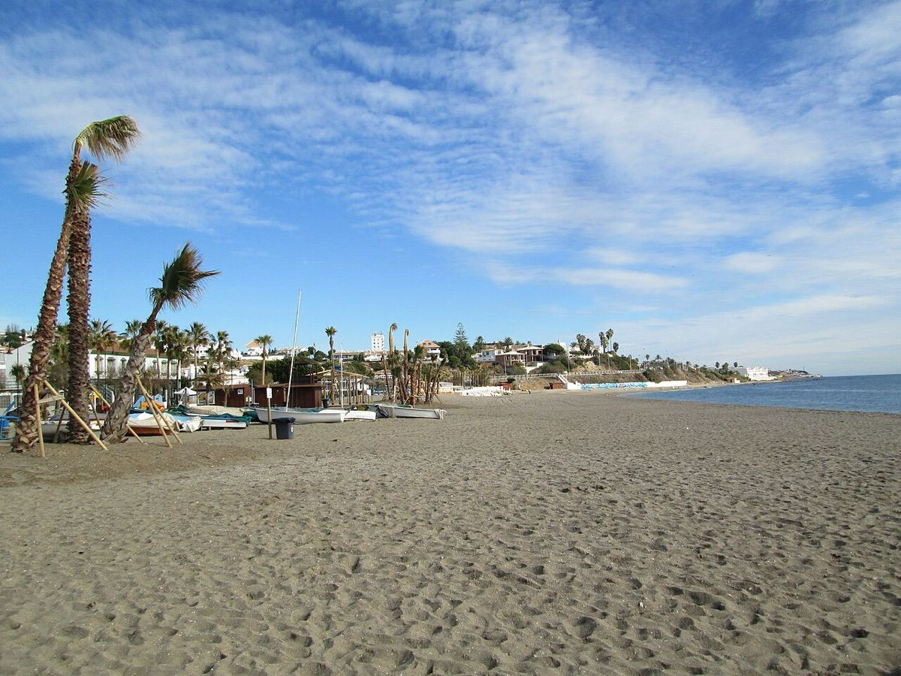
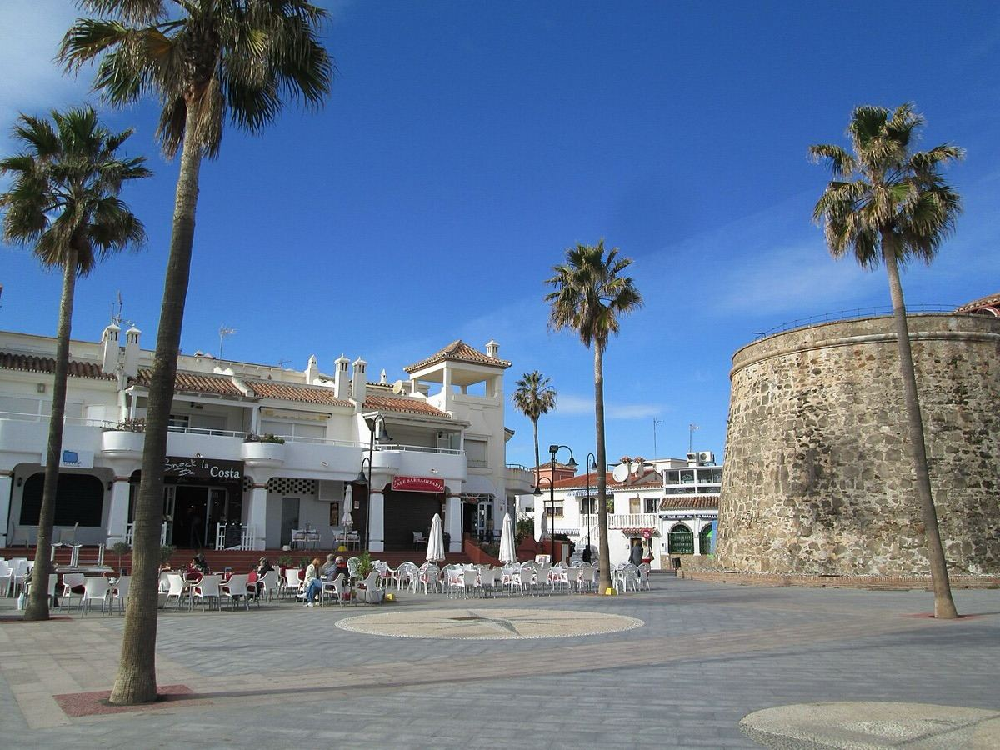
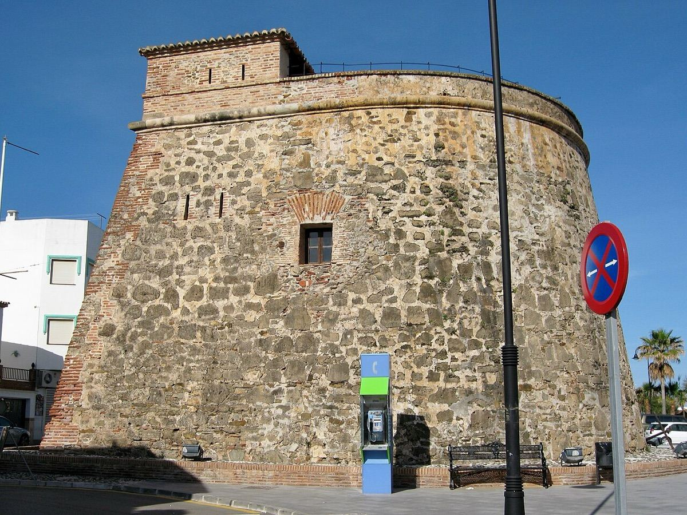
Calahonda, just east of La Cala in the Mijas municipality, holds the villa lane's top pick: Vrbo #1947564 — 4BR/3BA, sleeps 10, three of four bedrooms on the ground floor (grandmothers in queen rooms, kids in the bunk room), private heated pool, 10-minute walk to the beach and restaurants, 26 minutes to the airport. Best-evidenced kid-friendliness in the villa sweep: 9.2/10 from 67 verified reviews, including a family of 9. No price published; one review said the pool "could do with some attention" (Jun 2023); no pool fence stated. Nothing booked or contacted.
The hotel lane gained a budget floor: VIK Gran Hotel Costa del Sol is in La Cala de Mijas — the old "hard to navigate with walking difficulties" drop is debunked (flat beachfront property with elevator). At £63/night non-eclipse it is the budget floor only: tired interiors, food complaints, no slides, sleep-6 unverified.
La Cala itself is unchanged: a compact village centre with gently shelving sand explicitly recommended for young children, supermarkets and restaurants on foot, and the coastal footpath starting here — but no train (nearest is Fuengirola by bus), and no viewing-spot or obstruction check has been done. Totality 3m21s.
- For: the strongest villa candidate found anywhere, with ground-floor bedrooms for the grandmothers; gently shelving sand suited to young children; a walkable, less high-rise village centre.
- Against: no train — every rail trip needs a bus to Fuengirola first; the villa has no published price; the budget hotel is tired with unverified sleep-6; no eclipse-day viewing spot checked.
- Official tourism site: turismo.mijas.es
Accommodation options
Prices are Booking.com snapshots for four adults and two children, checked 2026-09-19 (9-night figures) or 2026-09-20 (6- and 7-night figures). Where a listing excludes 10% VAT, the VAT-inclusive total is an estimate (list price × 1.10). None of these is a quote from the property. AEHCOS sources reported hotels planned to finalize fuller 2027 rates around November 2026.
ViVi Homes Sara – Pool, Terrace, Golf & Beach
Deluxe Apartment, listed as beachfront, with Playa de La Cala under 1 km away. About 116 m² (1249 ft²), 3 bedrooms, all single or twin beds (six twin beds total, no doubles anywhere), 3 bathrooms per Booking (the agency page instead describes 2 bathrooms plus a separate toilet — the same ambiguity pattern as Diana 2 in Benalmádena). Air conditioning listed; a lift is not stated. The agency's own listing discloses "occasional noise disturbance... due to nearby construction" nearby. Its street address is unresolved: Booking gives Calle Sierra de Baza, Block 1, La Cala de Mijas; the agency page gives Calle Almendralejo de Jarales, Sitio de Calahonda — different streets in adjacent named localities sharing the same postcode.
| Stay | Nights | Total | VAT | Terms |
|---|---|---|---|---|
| 29 Jul – 5 Aug | 7 | About €7,061 (incl. €199 cleaning fee) | Not shown; treat as shown | Free cancellation before 29 Jun 2027; nothing paid until 27 Jun 2027 |
| 31 Jul – 7 Aug | 7 | About €7,061 (same figure) | Same | Free cancellation before 1 Jul 2027; nothing paid until 29 Jun 2027 |
| 29 Jul – 4 Aug | 6 | Not offered | — | "You need to stay 7+ nights to book your selected dates" |
| 31 Jul – 3 Aug | 3 | Not offered | — | Same 7-night-minimum message |
- The 7-night rate is only about 3% above the property's 9-night nightly rate — one of the smallest short-stay premiums found across the whole search, but it only appears once the 7-night floor is met.
- One guest review mentions possible road noise from the nearby AP-7 motorway, but that same reviewer said it wasn't actually audible.
- VAT treatment is unconfirmed; the total may or may not already include it.
Sea Apartment Cala de Mijas
Three-bedroom, two-bathroom apartment on Pasaje del Mar, described as oceanfront with a 1-minute walk to Playa de La Cala. The best review score among the live-priced apartments here (9.0 from 51 reviews).
Only a 9-night snapshot exists (about €15,425 incl. VAT est. for 29 Jul – 7 Aug, checked 2026-09-19); no 6–7-night price was checked.
Las Mimosas
Two-bedroom, two-bathroom apartment, Avenida Descubrimiento, with a confirmed lift and a 5-minute walk to Playa de La Cala. Rated 8.7 from 22 reviews on Booking.com (2026-09-21; an earlier check recorded 9.4 from 29). As listed it sleeps only four.
Sleeps only 4 as listed. Booking's only room type for this property is a Two-Bedroom Apartment, maximum 4 guests — it doesn't fit a party of six in a single unit unless paired with a second unit, which hasn't been confirmed as available or bookable together.
Showed no availability on Booking.com for 29 Jul – 7 Aug 2027, checked 2026-09-19. This is channel-specific — it is not proof the property is unavailable directly from the owner or through another channel, and unposted 2027 inventory elsewhere is not evidence of a sellout.
Townhouse, Calle Antequera 18 — a possibility pending the stairs count
200 m from the beach (Booking gives a 3-minute walk, 984 ft, to Playa de La Cala–La Butibamba). A 3-bedroom, 2-bathroom apartment, about 250 m² (2691 ft²), with a roof terrace guests repeatedly mention, and the best location score (10) of any La Cala property researched. Review score 8.7 "Excellent" from 19 reviews.
Booking's listing confirms "access to upper floors by stairs only" — no lift — but the number of flights between the entrance and the bedrooms and a bathroom isn't stated anywhere found. Under the family's rule, one flight without a lift is fine and more than one fails, so this property is no longer ruled out on stairs alone; it stays uncounted until a direct check is possible.
About €4,288 incl. VAT (est.) for 7 nights, 29 Jul – 5 Aug (€3,898 excl. VAT, including a €210 cleaning fee; Booking.com, checked 2026-09-21). Non-refundable. Three double beds, two bathrooms, about 250 m², a roof terrace and private parking.
VIK Gran Hotel Costa del Sol — budget-floor hotel option
Beachfront on Butibamba beach, a flat property with an elevator — the old "hard to navigate with walking difficulties" drop is debunked. No longer ruled out on bathrooms either: every room is described property-wide as bathtub rather than walk-in shower, and regular tubs are acceptable. £63/night non-eclipse. Caveats: tired interiors, food complaints, no slides, sleep-6 unverified, no 2027 rates loaded. (See Summary.)
Ruled out or not yet offered
- The Orange House Boutique Hotel: walk-in showers confirmed in every room, a centre location, but no 2027 rates loaded, and adjacency between a family room and a twin room is unconfirmed.
- A "boho-chic" terraced house (30 m from the beach) and a "Mijas Playa Club"-style townhouse (60 m from the beach): both quoted only as generic seasonal benchmark rates from an aggregator site, with no individually confirmed listing URL or live 2027 price.
Links
Photos of each property are on its own site or listing; they aren't copied here. Booking.com links open with the family's dates and party filled in; nothing is booked by opening them.
Eclipse viewing
- Totality at Playa de La Cala: 3m21s, from about 10:47:03 to 10:50:25 CEST on 2 August 2027 (module A, anchored to IGN town figures, accurate to about ±2 s).
- The sun is at about 39° altitude and 96° azimuth, just south of due east.
- A specific viewing spot and building obstruction check were not done for La Cala — module F, which checked walking distance and sightline obstructions for the other finalists, did not cover this area.
- Map: Playa de La Cala on Google Maps
Getting there and around
- No train. La Cala has no Cercanías station. The nearest is Fuengirola, reached by the M-220 bus, about 15 minutes, running every 30 minutes.
- From Málaga airport: a pre-booked minivan is the standard approach used for every other search area, but no La Cala-specific price or journey time was checked in this research.
- Daily life without a car: the town centre to the beach promenade is 808 m, flat (about 8 m of climb on the return leg), with no road crossing. Supermarkets (Mercadona, Lidl) and a wide mix of restaurants sit within the centre.
- The bus-stop-to-beach route is different. From the M-220 stop to the beach is 589 m and also essentially flat, but it crosses the A-7 at grade, with the crossing type (signalled or not) unconfirmed — worth checking before relying on it with children and grandmothers, since "flat" doesn't mean "safe to cross."
- Senda Litoral: the walkable coastal footpath along this stretch of coast starts here.
- Day trips: Bioparc zoo is a bus ride away in Fuengirola; Sea Life in Benalmádena needs the bus plus the train, or a taxi.
Beach and children
- La Cala's beach is explicitly marketed and visitor-reported as fine, golden sand with a shallow, gentle entry suited to families — the strongest "good for young children" signal found across the whole search area.
- The beach carries Blue Flag status and a long promenade.
- No zoo or aquarium is within an ordinary walk of the centre.
- Websites: Mijas coastal footpath (Senda Litoral)
Access for grandmothers
- The town centre-to-beach route is flat and short (808 m, about 8 m of climb).
- The bus-stop route to the beach is also flat, but its at-grade A-7 crossing is unconfirmed as signalled — a genuine open question given the party includes two grandmothers and two young children.
- ViVi Homes Sara does not state whether it has a lift.
- Las Mimosas has a confirmed lift, but showed no availability for the working dates, and as listed sleeps only 4.
- The Calle Antequera townhouse has stairs only, no lift. Under the family's rule that's fine if it's one flight and fails if it's more, but the flight count to the bedrooms and a bathroom isn't confirmed — it's a possibility pending that answer, not ruled out.
Heat, weather and sea
- La Cala sits within the same central coastal stretch as Fuengirola and Benalmádena, which sources name as the most terral-exposed part of the coast; named "avoid on terral days" lists cite Marbella and Fuengirola beaches specifically, not La Cala by name, but the same hot, dry wind affects this stretch generally.
- Sea: typically about 24–26°C in August on this central stretch, with the same cold-water risk documented elsewhere on this coast (the Málaga buoy recorded 15.6°C on 25 August 2026).
- Eclipse-day weather: climatology favours this Mediterranean coast over the Atlantic side, but that is not a forecast.
- Fiesta: La Cala's own feria ran 21–26 July 2026, just before the family's working arrival window (29–31 July). The 2027 date is not yet published and needs a check closer to the date.
Open questions
- Exact 2027 dates for La Cala's feria.
- Whether the bus-stop-to-beach A-7 crossing is signalled or otherwise controlled.
- Whether ViVi Homes Sara has a lift, and which of its two disclosed street addresses is correct.
- How many flights of stairs separate the Calle Antequera townhouse's entrance from its bedrooms and a bathroom.
- A 6- or 7-night price for Sea Apartment Cala de Mijas.
- Whether Las Mimosas has availability directly from the owner or another channel, or could be paired with a second unit to fit six.
- A minivan or taxi price and journey time from Málaga airport specific to La Cala.
- A specific viewing spot and building obstruction check, as done for the other three finalists.
Sources
Vault notes (names only):
- Eclipse-2027-Shortlist-Synthesis-2026-09-19 (current state)
- Eclipse-2027-Comfort-Check-Costa-del-Sol-2026-09-21
- Eclipse-2027-Comfort-Check-Other-Areas-2026-09-21
- Eclipse-2027-Module-E-La-Cala-2026-09-19
- Eclipse-2027-Module-E-Live-Check-2026-09-19
- Eclipse-2027-Short-Stay-Check-2026-09-20
- Eclipse-2027-Gap-Walkability-Measurements-2026-09-19
- Eclipse-2027-Gap-Summer-Beach-Conditions-2026-09-19
- Eclipse-2027-Module-C-Central-Comparison-2026-09-19
- Eclipse-2027-Gap-Eclipse-Week-Context-2026-09-19
- Eclipse-2027-Module-A-Eclipse-Geography-2026-09-19
External:
Marbella
Leading
Costa del Sol town in the path, with 3m17s totality (sweep figure; representative, sources disagree ±10–20s). Flat paseo and beaches, strong infrastructure, and the deepest accommodation bench in the research: two top-ranked hotel picks, three apartment picks, and a villa lane. It is the priciest lane — Airbnb averages ~$290–350/night in August.
Two options rank #1 and #4 in the hotel re-run: Don Carlos Marbella and Marriott's Marbella Beach Resort, both in Elviria. The apartment lane adds three verified sleep-6 units in Marbella center. Totality ranks last as a criterion.
- For: strongest kids'-club evidence of the whole sweep; 3BR apartments under one roof; flat beach life; excellent weather odds.
- Against: the most expensive lane; Elviria hotels are somewhat isolated from Marbella center; expensive F&B at Don Carlos — the caveat is price, not quality.
- Official tourism site: none verified in this research pass.
Accommodation options
All prices are non-eclipse signals checked 2026-09-21. No August 2027 pricing exists. Assume eclipse premiums and 7-night minimums.
Don Carlos Marbella (Elviria)
4.8 Tripadvisor (~300, Travellers' Choice), Google 4.5, renovated summer 2025. Strongest kids'-club evidence of the whole sweep: "the kids club was the absolute highlight for our family" (Aug 2025, direct read); "the best I've encountered in seven and a half years of traveling the world with my son" (Aug 2025, direct read). Children's pool, 3 lifeguarded water slides, playground, Rafa Nadal tennis, sandy beach through flat gardens. Sleep-6: two-bedroom residences (verify occupancy) or interconnecting rooms. ~$270–515/night non-eclipse. Caveats: somewhat isolated, expensive F&B.
Marriott's Marbella Beach Resort (Elviria)
Hotel re-run #4. Official marriott.com confirms roll-in shower, non-slip grab rails, elevators; accessible rooms limited per type — phone confirmation advised. Beachfront; 1/2/3BR apartments; kids' club, playground, pools with slides; 9.2/5,268. 3-bedroom apartments under one roof are the best single-unit fit found. Caveats: likely priciest lane; confirm an accessible unit by phone.
Apartments (Marbella center)
- #3 "3 Bedroom Apt. Premier Location" (Vrbo): 3BR/2BA, sleeps 6 in real beds (two singles + two singles + king) — no sofa beds. Lift confirmed ("lift to your front door"). Kitchen + washer + dishwasher. No pool. 200m to Paseo Marítimo/beach; 5-min stroll to Old Town; garage included. 10/10 Exceptional, 7 verified reviews. Red flags: no price shown; host-set cancellation.
- #11 "Townhouse in the heart of Marbella Old Town" (Vrbo): 3BR/2.5BA, sleeps 6. Townhouse, no lift — one internal flight to all bedrooms (within limits); living/kitchen downstairs. Rooftop terrace + patio — best eclipse-viewing setup of the apartment sweep. From ~CA$262/night non-eclipse (Nov 2026 proxy). 8.4/10, 6 verified reviews; one stairs-repair note (Aug 2026) — verify fixed.
- #7 "Casa Alegre," Parque Marbella: 3BR/2BA, sleeps 6. 7th floor; lift near-certain but unconfirmed — verify. Kitchen + washer. Communal pool + children's pool; park with play area next door. €950–€1,680/week non-eclipse. No guest reviews (agency-managed stock).
Villas
- CasaCara, Costabella: the only villa in the corridor sweep clearing both old hard filters on snippet evidence — single floor, 4BR/sleeps 9, confirmed walk-in shower, private pool, children's outdoor equipment, ~400–500m from beach, 9.3–9.7 ratings. Aug 2025 family review: pool "star of the show." €484–$1,049/night non-eclipse. Needs per-unit verification of single level and shower, plus cancellation/minimum-stay terms.
- Villa Buenavista (Estepona, nearby): the only verified August 2027 eclipse price anywhere — €10,500/week for Sat 31 Jul–Sat 7 Aug 2027. 4BR/6BA, sleeps 8; three ground-floor bedrooms; private south-facing pool. Luxury price; hilltop = drive everywhere.
Eclipse viewing
- Totality: 3m17s (representative estimate), about 10:45–10:52am CEST on 2 August 2027. The sun is over the sea to the east.
- No driving needed from the Elviria beachfront hotels or the Marbella-center apartments.
- The old-town townhouse's rooftop terrace is the best private viewing setup found in the apartment sweep.
- Expect heavy August crowds on public beaches on top of eclipse visitors.
Getting there and around
- Málaga airport: about 45–50 min by road (approximate). No rail link; taxi/transfer or rental car.
- Elviria hotels are ~10 km east of Marbella center — town access by car, taxi, or bus. Beach life at the hotel needs no car.
- The Marbella-center apartments need no car for daily life: beach 200 m, old town 5 min, garage included at apartment #3.
Beach and children
- Sandy beaches through flat gardens at Don Carlos; flat paseo for walking.
- Children's pool, 3 lifeguarded water slides, playground, Rafa Nadal tennis at Don Carlos; kids' club and slides at Marriott's.
- The town beach near the old town is Venus Beach (~7 min walk from apartment #11).
- Pool fencing is rarely stated in listings; verify before booking (diligence, not a gate — kids are 6.5 and 8.5).
Access for grandmothers
- Apartment #3: lift to the front door — simplest grandmother layout of the set.
- Apartment #11: one internal flight to bedrooms (within tolerance); rooftop is extra flights but optional for the grandmothers. Stairs-repair note from Aug 2026 — verify completed.
- Marriott's Marbella Beach Resort: official roll-in showers and grab rails; confirm an accessible 3BR unit by phone.
- Casa Alegre: 7th floor, lift near-certain but unconfirmed.
- Don Carlos: accessibility evidence conflicts across sources — do not shortlist without direct property confirmation.
Heat, weather and sea
- Málaga coast ~90–95% favorable climatology around 10:45am — not a forecast.
- Terral risk: a hot, dry inland wind can push this coast toward 40°C; air conditioning in bedrooms matters.
- Morning marine-layer risk exists corridor-wide; the Mediterranean side is lower risk than the Atlantic side.
Open questions
- Don Carlos: 2BR residence max occupancy; eclipse-week rates; bathroom setup in the residence units.
- Marriott: confirm an accessible 3BR unit by phone; August 2027 rates.
- Apartment #3: price and August 2027 availability; cancellation terms.
- Apartment #11: verify the stairs repair; confirm August 2027 availability.
- CasaCara: per-unit verification of single level and walk-in shower; cancellation terms and minimum stay.
- Eclipse-week pricing everywhere — watch for August 2027 calendars to open.
Sources
Vault notes (names only):
- Eclipse-2027-Corridor-Sweep-2026-09-21
- Eclipse-2027-Hotel-Re-Run-2026-09-21
- Eclipse-2027-Apartment-Sweep-2026-09-21
- Eclipse-2027-Villa-Repass-2026-09-21
Torrox Costa
Leading
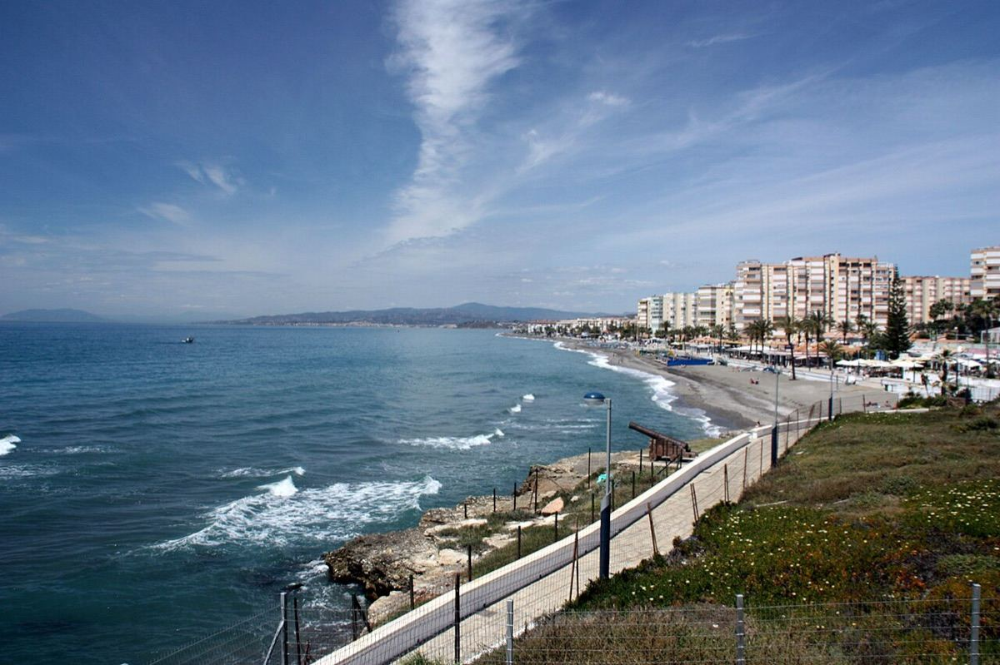
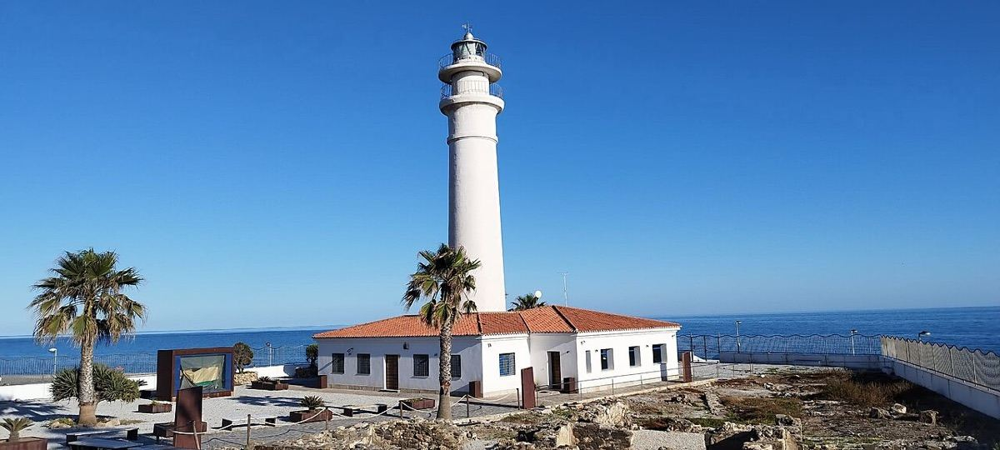
Promoted to a leading town. Iberostar Waves Málaga Playa is #2 in the hotel re-run: 4.4/5 from 3,594 reviews, water park with slides, mini-disco, family rooms, confirmed walk-in showers, 4 lifts, beachfront flat promenade. Caveats: August lounger competition, restaurant queues. No 2027 rate is loaded, and Booking showed no availability for the target week as of 2026-09-21 — a rates-not-loaded signal, not a sellout — so this is a November re-check, not a booking. No single unit sleeps six; the family would need two or three rooms.
The town's other assets are unchanged: the flattest, most accessibility-documented promenade checked in this research; the least terral exposure on the Málaga coast (3–5°C cooler than Marbella or Torremolinos during an episode); Blue Flag beaches; warm, steady sea. The weakness is unchanged too: totality is 1m49s, the shortest of any candidate area. The dated sections below keep the earlier checks (NOVASOL houses, Panorama Beach).
- For: the strongest all-round family hotel in the research; flattest, most accessibility-documented promenade; least terral heat on the coast; Blue Flag beaches; no terral-driven temperature spikes.
- Against: shortest totality anywhere (1m49s); no 2027 rate or bookable availability yet; quieter, less "destination" character than Nerja; the supermarket route crosses the N-340a at grade with an unconfirmed crossing type.
Accommodation options
No live-priced 2027 candidates are held for Torrox Costa yet. NOVASOL beach houses are a possibility, and Panorama Beach apartments come with a stair-and-crossing caveat. The section below is preserved from the earlier pass.
Iberostar Waves Málaga Playa — the hotel pick
#2 in the hotel re-run. 4.4/5 from 3,594 reviews. Water park with slides, mini-disco, family rooms, confirmed walk-in showers, 4 lifts, beachfront flat promenade. Caveats: August lounger competition, restaurant queues. No single unit sleeps six — the family would need two or three rooms. No 2027 rate loaded; Booking showed no availability for the target week as of 2026-09-21 — a rates-not-loaded signal, not a sellout. November re-check. (See Summary.)
NOVASOL houses
Beach houses sleeping up to six, with private pools, listed through NOVASOL, about 15–25 minutes on foot from the promenade along mostly flat streets. Reviews are strong but none is recent enough to confirm the current state of the pool fencing. No 2027 price checked.
Panorama Beach
Seafront apartment building on the promenade. Two-bedroom units sleep up to four — too small on their own; three-bedroom units are scarce. The building has a lift, but the supermarket route crosses the N-340a at grade with an unconfirmed crossing type. No 2027 price checked.
Eclipse viewing
- Totality at Playa de Ferrara: 1m49s, about 10:49:06–10:50:55 CEST on 2 August 2027 (module A, anchored to IGN town figures, accurate to about ±2 s) — the shortest of any candidate area.
- The sun is at about 40° altitude and 98° azimuth, just south of due east, over the sea.
- No driving is needed on eclipse day. Beaches are public and need no reservation, but expect heavy August crowds on top of eclipse visitors.
- Map: Playa de Ferrara on Google Maps
Getting there and around
- From Málaga airport: about 50 minutes by road (estimate); a pre-booked minivan is the standard approach for six.
- In town: the promenade is flat and continuous; the town itself is a short bus or taxi ride inland and uphill.
Beach and children
- Playa de Ferrara and El Morche beaches held Blue Flag status in 2026.
- The promenade is the flattest and most accessibility-documented of any area checked.
- No dedicated kids' club was found in Torrox Costa itself; the Iberostar (Málaga Playa, on the Torrox–Nerja border) has one.
Access for grandmothers
- The promenade is flat; the Iberostar site documents walk-in showers and 4 lifts.
- The supermarket route crosses the N-340a at grade with an unconfirmed crossing type.
- The inland town of Torrox is uphill — the coastal strip is the base.
Heat, weather and sea
- The least terral exposure on the Málaga coast: about 3–5°C cooler than Marbella or Torremolinos during a terral episode.
- Sea typically 24–26°C in August, warm and steady.
- Eclipse-day weather: climatology favours this Mediterranean coast, but that is not a forecast.
Open questions
- Whether Iberostar Waves Málaga Playa loads a 2027 rate; AEHCOS sources reported hotels planned to finalize rates around November 2026.
- The N-340a crossing type on the supermarket route.
- Whether any NOVASOL house or Panorama Beach unit posts a dated 2027 offer.
Sources
Vault notes (names only):
- Eclipse-2027-Shortlist-Synthesis-2026-09-19 (current state)
- Eclipse-2027-Comfort-Check-Costa-del-Sol-2026-09-21
- Eclipse-2027-Module-A-Eclipse-Geography-2026-09-19
Conil de la Frontera
Contender
Calm family beaches, a compact walkable center, and moderate prices on the Cádiz Atlantic coast. Conil combines the best-verified accessibility evidence in the sweep (Hipotels Gran Conil & Spa) with a deep bench of family villas.
- For: TUR4all-verified beachfront hotel; two strong beachfront hotels with kids' clubs; three family villas with ground-floor or zero-stair layouts; 4m00s of totality; moderate prices.
- Against: old-town cobbles limit grandma wandering; August parking is described in the sweep as a "pesadilla" — book lodging with parking; morning marine-layer risk on the Atlantic coast.
Accommodation options
All prices are non-eclipse signals checked 2026-09-21. No August 2027 pricing is published anywhere. Nothing booked or contacted.
Hipotels Gran Conil & Spa
TUR4all-listed — the strongest accessibility evidence in the sweep: step-free entrance, lift, 4 adapted rooms, ground-level/roll-in shower with grab bars, adjustable head, fixed seat. Kids' club and children's pool. Beachfront via ramp walkway and beach boardwalk. Moderate prices (no exact price signal in the research). Caveats: adapted-room doors under 78 cm; no disability-trained staff; one 2013 lift-outage report worth re-checking; August parking.
Hotel Fuerte Conil-Resort
9.1/10 from 10,683 reviews. Forti Club, beachfront, children's pool. Roll-in showers in select rooms per third-party reports, elevator, accessible routes, wheelchair-accessible pool. Caveat: accessibility not officially verified — no official accessibility page, not TUR4all-listed.
Apartamento Nicolas "Only Families", town center
3BR/1BA, 90m², sleeps 6. Strongest walkability: 5-min town center, 6-min Los Bateles beach, 250m to Mercado de Abastos. ~€276/night non-eclipse. 9.5/226 reviews. Families-only by design. Red flags: one bathroom for six; floor/lift unstated — likely low-rise without lift, verify; check-in 16:00–21:00; €100 damage deposit; no pool.
Villa La Contenta, town center
4BR/3BA, sleeps 8+, 420m², two levels by outdoor staircase — grandmothers take two ground-floor bedrooms and avoid stairs entirely. Lockable pool fence: the best kid-safety pool story of the villa set. 2000m² garden. Walk to downtown and beach, shops under 100m. July/August min 7 nights Sun–Sun (Sun 1–8 Aug 2027 covers the eclipse). Red flags: no reviews visible; no price published; €500 security deposit; cancellation unstated.
Villa Lucia, Fuente del Gallo
4BR/3BA, sleeps 8, all on one level — zero stairs anywhere. Private pool in walled garden. 3-min walk to beach. 10/10, 2 reviews. Red flags: only 2 reviews; one noted narrow double beds; no price published.
Villa Mandalay, El Roqueo
4BR: single-level main house (master en-suite + two twins + family bath) plus a separate garden bungalow — a good six-person fit (grandmas in twins, parents in bungalow, kids in master or twin). Large private pool, mature gardens, 400m to beach and restaurants. 4.95/5, 21 reviews. Red flags: evidence is snippet-level only; no prices, min-stay, or cancellation terms visible; dog-friendly — allergen note.
Eclipse viewing
- Totality in Conil: 4m00s, around 10:45–10:52am CEST on 2 August 2027. Durations are representative (sources disagree ±10–20s).
- No viewing point was measured for Conil. Beaches are public and need no reservation; expect August crowds plus eclipse visitors.
- Morning marine-layer risk on the Cádiz Atlantic coast has no town-level data — keep a mobile viewing plan for eclipse morning.
Getting there and around
- Nearest airports are Jerez (XRY) or Málaga (AGP). Drive times were not checked in this research — verify with a route planner.
- The town center is compact and walkable. Los Bateles beach is a 6-minute walk from the town-center options.
- August parking is described as a "pesadilla" — book lodging with parking included.
Beach and children
- Calm family beaches; Los Bateles is the town beach near the apartment and villa options.
- Kids' clubs at both hotels (Gran Conil kids' club, Fuerte Forti Club) and children's pools at both.
- Villa private pools: Villa La Contenta has a lockable fence; fencing unstated at Lucia and Mandalay — verify before booking.
- How gently the beaches shelve is not documented in this research.
Access for grandmothers
- Gran Conil is TUR4all-verified: step-free entrance, lift, adapted rooms — but adapted-room doors are under 78 cm.
- Fuerte Conil has roll-in showers in select rooms per third-party reports only; request explicitly and confirm.
- Villa Lucia has zero stairs anywhere. Villa La Contenta keeps grandmothers on the ground floor. The Nicolas apartment's floor and lift status are unstated — verify.
- Old-town cobbles limit casual wandering; both grandmothers walk, handle one flight of stairs, and manage a gentle 10-minute climb.
Heat, weather and sea
- Cádiz Atlantic coast: ~85–90% favorable around 10:45am by climatology, with a morning marine-layer caveat. Climatology is not a forecast.
- Atlantic sea is cooler than the Mediterranean; August air temperatures are typical southern-Spain heat.
- No town-level eclipse-day weather data exists; the mitigation is a mobile viewing plan.
Open questions
- August pricing and adapted-room availability at Gran Conil.
- Shower-room confirmation at Fuerte Conil.
- Floor, lift, and parking at the Nicolas apartment.
- Prices and cancellation terms at all three villas.
- How the beaches shelve for small children.
Sources
Vault notes (names only):
- Eclipse-2027-Corridor-Sweep-2026-09-21
- Eclipse-2027-Hotel-Re-Run-2026-09-21
- Eclipse-2027-Apartment-Sweep-2026-09-21
- Eclipse-2027-Villa-Repass-2026-09-21
Central Estepona
Contender
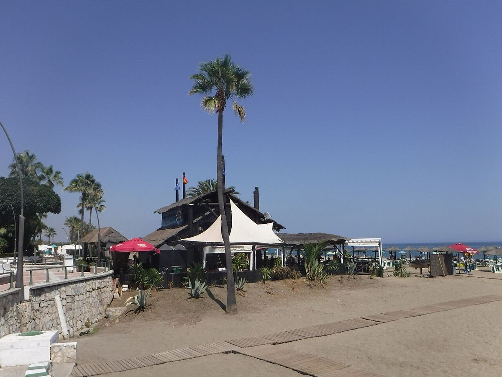
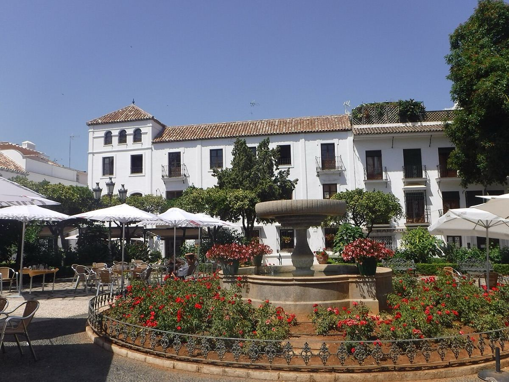
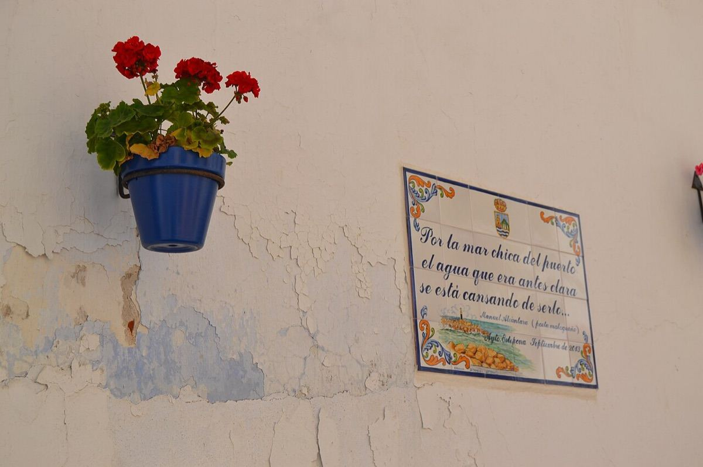
Estepona holds the only verified August 2027 eclipse price found anywhere in the research: Villa Buenavista (Sierra Bermeja, TimeInSpain) at €10,500/week for 1 Aug–1 Sep 2027, Sat–Sat — the Sat 31 Jul–Sat 7 Aug window covers the eclipse. 4BR/6BA, sleeps 8; three ground-floor bedrooms; private south-facing pool with sea views, paddle court, putting green, gym/sauna. Red flags: luxury price; hilltop setting means driving everywhere; balance due 6 weeks out. Nothing contacted.
The hotel lane is back in play: H10 Estepona Palace is #10 in the hotel re-run — 4.0 from ~2,870 reviews, free kids' club in high season, children's pool, playground, mini-disco, all-inclusive option, ~€205/night non-eclipse. The old bathtub-shower drop reason is moot. The Sept 2026 "no availability" signal is unresolved: Oct 2026 rates are public, so it is not a general block, but whether the eclipse window is blocked, sold, or simply not loaded is unknown. Also from the re-run: Sol Marbella Estepona Atalaya Park (splash park + kids' club, 3.8, rocky beach, car needed) and Globales Playa Estepona (biggest water thrills, 3.9, hidden charges, weak food).
Central Estepona itself is unchanged: the longest totality on the Costa del Sol (3m37s), a dense walkable old town, promenade and boulevard, and the best-documented children's beach facilities — but the coolest, most variable sea near the Strait, and the longest transfer of the Costa del Sol towns.
- For: the only real 2027 eclipse price anchor in the whole research; longest Costa del Sol totality; a revived hotel candidate with a real kids' club; walkable old town and promenade.
- Against: Villa Buenavista needs a car for everything; H10's eclipse-window availability is genuinely unknown; cooler, more variable sea; farther from the airport than the central towns.
- Official tourism site: turismo.estepona.es
Accommodation options
Prices below are a mix of a published tariff and Booking.com snapshots for four adults and two children, dated as noted. None of these is a dated 2027 quote unless stated. AEHCOS sources reported hotels planned to finalize 2027 rates around November 2026.
El Faro / EST31, Estepona port
A 3-bedroom (2 doubles, 2 singles), 2-bathroom apartment in the El Faro building on the port promenade, between the lighthouse and the bullring. Full air conditioning, lift confirmed, about 250 m to the beach, walking distance to the promenade and two supermarkets, small communal pool with a lifeguard on duty, open May–September, parking. No independent review score was found for this listing — comfort and condition claims rest on the agency's own description.
| Stay | Nights | Total | Terms |
|---|---|---|---|
| 29 Jul – 5 Aug | 7 | About €1,200 (3 July nights + 4 August nights at €135/€150, plus €195 fee) | 7-night minimum in July and August; no changeover-day rule stated |
| 31 Jul – 7 Aug | 7 | About €1,230 (1 July night + 6 August nights at €135/€150, plus €195 fee) | Same |
| 29 Jul – 4 Aug / 31 Jul – 3 Aug | 6 or 3 | Not offered | Falls short of the property's own published 7-night minimum |
- This is the property's own published rate table (estepona-apartments.com), read directly, checked 2026-09-20 — a published tariff, not a dated quote for 2027. The site's own availability calendar shows nothing booked in any month, including next month, so it is not a usable availability signal either way.
- Booking is by inquiry form to the agency, not a live online booking engine; no inquiry has been sent.
- The mandatory €195 fee covers cleaning, laundry and booking. Exact floor and street address are not published; the agency's cancellation and payment terms were not obtained.
H10 Estepona Palace — hotel candidate, eclipse-window availability unresolved
Playa Guadalobón, about 2.5 km from the old town. #10 in the hotel re-run: 4.0 from ~2,870 reviews, free kids' club in high season, children's pool, playground, mini-disco, all-inclusive option, ~€205/night non-eclipse. The old bathtub-shower drop reason is moot. Purpose-built family room (35 m², 2 adults + 2 children) plus a Superior room and a lift, but adjacency of the two rooms was never confirmed. Not substantively ruled out: the September 2026 "no availability" signal is unresolved — October 2026 rates are public, so it is not a general block; whether the eclipse window is blocked, sold, or simply not loaded is unknown. Re-check when 2027 rates load (expected around November 2026). (See Summary.)
Ruled out or not yet offered
- Hotel Mediterráneo by Croma, Hotel Boutique Casa Veracruz, Mirador de Estepona Hills: all listed on Booking.com with no rooms offered for these dates, checked 2026-09-20. Hotel Buenavista has no matching Booking.com listing at all.
- Live central apartments — non-refundable, no confirmed lift: Estepona Town Apartment CARMEN (3BR/2BA) showed about €4,869 incl. VAT, but only as a 9-night snapshot (checked 2026-09-19); no 6–7-night price was checked. Estepona Port Apartment JEAN is on the 5th floor with no elevator mentioned — likely disqualifying on its own. Oasis in Estepona has a self-contradictory listing (booked as three bedrooms, described in its own text as one). All three are non-refundable, pay-before-arrival.
- Casa Mata Belén and Casa Mata Violeta (old town rentals, sister properties): weak mainly for their child policies, not only their stairs. Belén's listing says children under 7 are "generally not recommended" for safety — a direct conflict with the 6.5-year-old in the party; Violeta sets a minimum check-in age of 27, leaving the child's status unconfirmed. Both are also multi-level with stairs only and no lift, an unresolved secondary issue since the flight count isn't stated. Neither has a dated 2027 price.
- Casa Bonita, a villa near but outside central Estepona: a published 2027 rate computes to about €1,700 for the party, but its calendar has no availability across the eclipse week, has multiple levels, incomplete air conditioning, and the owner says a car is essential.
Links
Photos of each property are on its own site or listing; they aren't copied here. Booking.com links open with the family's dates and party filled in; nothing is booked by opening them.
Eclipse viewing
- Totality at Paseo Marítimo Pedro Manrique, central Estepona (36.4283, -5.1356): 3m37s, from about 10:46:22 to 10:49:59 CEST on 2 August 2027 (IGN's published figure; an independent recomputation gave 3m36.7s) — longer than La Cala (3m21s), Fuengirola (3m06s) or Benalmádena (2m54s).
- The sun is at about 39° altitude and 96° azimuth, just south of due east, over the sea — the same geometry as the rest of the western and central coast.
- No viewing-spot or obstruction check has been done for Estepona. The later finalist-area pass that checked specific beach points and buildings toward the sun for other areas did not cover it; treat any point on La Rada or the port promenade as unverified until walked or checked against imagery.
- Climatology (not a forecast) describes the Alboran coast, Gibraltar to Marbella, as faring particularly well against the Atlantic cloud that affects Spain's Cádiz-facing coast — a multi-year average, not a prediction for 2 August 2027.
- Map: Paseo Marítimo Pedro Manrique on Google Maps
Getting there and around
- From Málaga airport: about 1h15 by direct Avanza coach. No rail reaches this area — the Cercanías C1 line that serves Fuengirola and Benalmádena ends at Fuengirola. A pre-booked minivan transfer, the mode used elsewhere in this research, was not separately priced for Estepona.
- Within central Estepona: La Rada beach to the old town (Plaza de las Flores) is 710 m with a modest 9–13 m climb and one flight of steps; the old town to the fishing port/marina is a further 1.9 km with 33–45 m of climb but no major road crossing. Both legs are moderate, not steep, but they are not flat in the way Fuengirola's seafront is.
- Portugal leg: of the areas considered, this western stretch adds the most friction to a Portugal start. Estepona's nearest useful airport is Málaga (Gibraltar is closer on paper but has no useful flight network for this trip), so a Lisbon or Porto flight into Málaga plus the 1h15 road transfer is the realistic route.
Beach and children
- Playa de la Rada runs about 2,300 m and has a lifeguard/vigilance service, a children's play zone with trampolines, disabled access, showers and chiringuitos — the strongest documented children's-facility set of the areas compared in this round.
- The pedestrian promenade (about 3 km, La Rada to the fishing port) and the Bulevar connect the beach, old town and port on foot.
- La Rada's Blue Flag status for 2026 is unconfirmed. It did not appear among the 2026 Blue Flag beaches confirmed elsewhere in this research (Sabinillas, Fuengirola, Torrox, Benalmádena, Torremolinos and Almuñécar all did). Absence from that list is not by itself evidence of a water-quality problem — some beaches opt out of the certification — but it was not independently confirmed either.
- Beach surface is sand; it was not specifically flagged as steep-shelving in the sources checked, though the gentle-entry evidence here is thinner than what was found for La Cala de Mijas.
Access for grandmothers
- El Faro/EST31 has a confirmed lift — a genuine plus, though not on its own the deciding factor under the family's rule (a single flight without one would still be fine). H10 Estepona Palace also has a lift; its eclipse-window availability is unresolved (see Accommodation options). Estepona Port Apartment JEAN has no lift and is on the 5th floor, likely disqualifying regardless of flight count. Casa Mata Belén and Violeta have no lift and are multi-level, but their weaker problem is their child policies — Belén discourages under-7s and Violeta requires a 27+ check-in age, either of which could exclude the family outright.
- The walking routes within central Estepona carry real, if moderate, climbs — 9–13 m over 710 m to the old town, a further 33–45 m over 1.9 km to the port — gentle enough for the family's stated limit (a gentle 10-minute climb is fine), but longer and less flat than Fuengirola's seafront. The one flight of steps on the old-town route is the part to check.
Heat, weather and sea
- Terral: the same hazard documented for Fuengirola. Estepona is explicitly named among the beaches to avoid on terral days, with episodes pushing temperatures toward 40°C and occasionally above for a day or two, roughly 5–6 times a summer.
- Sea: cooler and more variable than the central Costa del Sol, being close to the Strait of Gibraltar. Near-Strait waters average roughly 21–23°C, more exposed to wind-driven upwelling cooling than Fuengirola or Benalmádena. The documented Málaga buoy drop (28.8°C to 15.6°C within about a week in August 2026) is a central-coast measurement, but illustrates the same upwelling mechanism at work here, more strongly.
- Wind: within reach of the Strait's levante/poniente funnel effect, though less than Sotogrande or Sabinillas further west — sandblasting and choppier water are more likely on levante days here than at Fuengirola.
- Fiesta: Estepona's main annual fair (Feria y Fiestas Mayores) fell 7–12 July 2026, outside the working travel window if the pattern holds; 2027 dates are not yet published.
Open questions
- El Faro/EST31: no dated 2027 quote or confirmed availability; the agency books only by inquiry form, and no inquiry has been sent.
- Whether H10 Estepona Palace or the other central hotels open availability once 2027 rates load; AEHCOS sources reported hotels planned to finalize rates around November 2026.
- No eclipse-viewing spot or building-obstruction check has been done for Estepona; one is needed before recommending a specific point on La Rada or the port promenade.
- La Rada's 2026 Blue Flag status.
- Estepona's 2027 feria dates.
- Whether the 6.5-year-old would actually be accepted at Casa Mata Belén or Violeta, if either is reconsidered, and if so how many flights of stairs each has.
- Whether El Faro/EST31 has any independent review history beyond the agency's own description.
Sources
Vault notes (names only):
- Eclipse-2027-Shortlist-Synthesis-2026-09-19 (current state, Estepona direct-channel check, short-stay figures)
- Eclipse-2027-Comfort-Check-Other-Areas-2026-09-21
- Eclipse-2027-Module-E-Estepona-2026-09-19
- Eclipse-2027-Module-E-Live-Check-2026-09-19
- Eclipse-2027-Short-Stay-Check-2026-09-20 (El Faro section)
- Eclipse-2027-Spain-Voice-Walk-2026-09-19
- Eclipse-2027-Module-B-Western-Comparison-2026-09-19
- Eclipse-2027-Gap-Walkability-Measurements-2026-09-19
- Eclipse-2027-Gap-Summer-Beach-Conditions-2026-09-19
- Eclipse-2027-Gap-Regional-Access-2026-09-19
- Eclipse-2027-Module-A-Eclipse-Geography-2026-09-19
External:
Fuengirola–Los Boliches
Contender
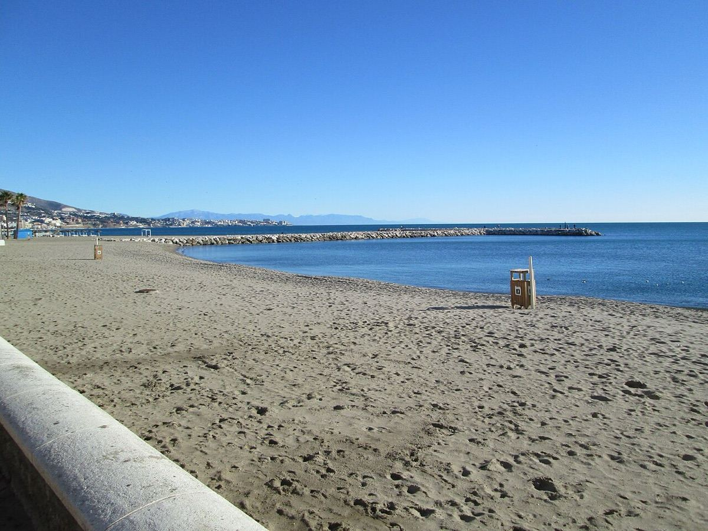
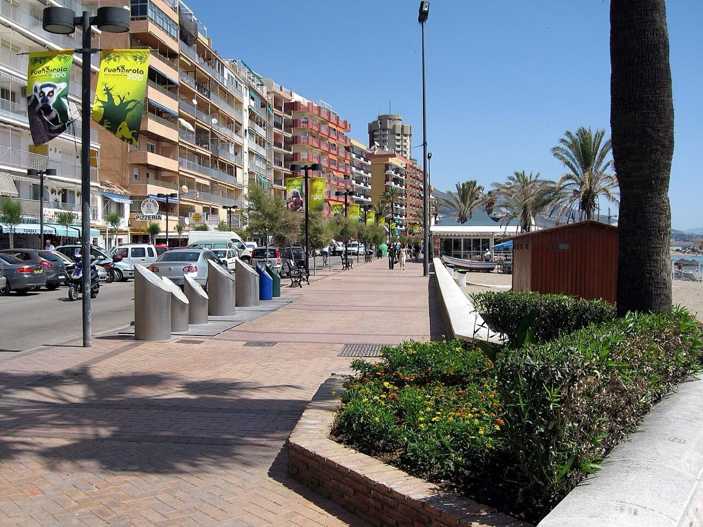
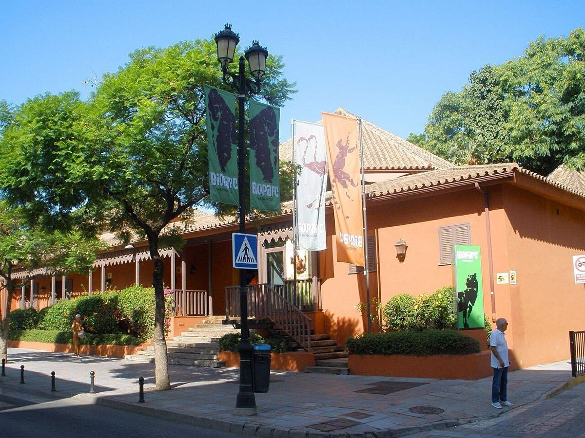
A strong all-round base and the flattest of the Costa del Sol finalists. The about-8 km flat promenade, Bioparc zoo, and the direct train from Málaga airport suit both children and grandmothers. Everyday life needs no car.
Leonardo Hotel Fuengirola is now ranked #8 in the hotel re-run: 4.3/5 from 2,129 reviews, walk-in wet rooms (which resolves the old bathroom question), beachfront town center, moderate price. Caveats: small pool, low loungers. The earlier two-room hold at about €6,200/6 nights is still recorded in the dated sections below, but it predates this ranking.
Two new apartment picks from the apartment sweep. "Fuengirola — Luxury 3 Bedrooms Apartment" at Myramar (Vrbo p4439283): 3BR/2BA, sleeps 6, washer confirmed, complex pool plus a separate kids' pool, 650 m/8-min flat walk to El Castillo Beach, from ~CA$145/night non-eclipse, 9.6/10 from 28 reviews. Red flags: town center is a 20–25-minute walk, and the train station is not walkable. Ref 298 (Vrbo p11344377): seafront 3BR on the promenade, 10/10, no pool, awkward key collection. All prices are non-eclipse signals checked 2026-09-21; expect eclipse premiums. Nothing is booked or contacted.
- For: flat walking everywhere measured; the zoo and promenade suit both children and grandmothers; train to the airport with no changes; Leonardo's wet rooms close the open bathroom question.
- Against: the busiest and most built-up of the options; terral exposure — sources name Fuengirola's beaches among those to avoid on terral days; eclipse-week availability is unverified at every property.
- Official tourism site: turismo.fuengirola.es
Accommodation options
Prices are Booking.com snapshots from 2026-09-20 for four adults and two children. Where the listing excludes 10% VAT, the VAT-inclusive total is an estimate (list price × 1.10). None of these is a quote from the property. AEHCOS sources reported hotels planned to finalize 2027 rates around November 2026.
Leonardo Hotel Fuengirola Costa del Sol
Superior Quadruple with side sea view plus a Comfort Twin, breakfast included. Lift confirmed. Review score 8.5 "Very Good" from about 5,213 reviews. Outdoor pool (seasonal). Breakfast buffet available (included on the rate above, or as an add-on elsewhere).
| Stay | Nights | Total, incl. VAT (est.) | Terms |
|---|---|---|---|
| 29 Jul – 4 Aug | 6 | About €6,200 | Free cancellation before 26 Jul 2027; nothing paid until 24 Jul 2027 |
| 29 Jul – 5 Aug | 7 | About €6,860 | Same |
| 31 Jul – 7 Aug | 7 | Not offered | "No availability" for this window |
| 31 Jul – 3 Aug | 3 | Not offered | No stay shorter than 4 nights across the eclipse night was offered |
- The quadruple is 22 m², with two twin beds and two sofa beds, so both children would sleep on sofa beds — a real comfort trade-off for a week-long stay, not just a configuration note.
- The hotel's own FAQ offers family rooms sleeping up to six, and interconnecting rooms, on advance request. That would be a better fit, but no price is published and it is not guaranteed.
- Bathroom: resolved by the September 2026 re-run. Walk-in wet rooms were found at the hotel, closing the old "bathtub or shower" question; confirm a wet-room unit when booking.
- Children: probably welcome, worth asking. Some third-party listings still carry the old "Florida Spa, adults recommended" branding. The hotel's own FAQ offers family rooms, cots, high chairs and a children's buffet. The 18+ rule applies only to the guest who checks in; the spa is 16+.
MalagaSuite Golden Views
Three-bedroom, two-bathroom apartment on the seafront promenade, with air conditioning in each room and a lift confirmed. It has a kitchen. Review score 8.4 "Very Good" from only 39 reviews — the best location score (9.9) of any property compared for this trip, but the lowest staff score (7.7) of the leading hotel and apartment candidates. About 105 m² (1130 ft²), on the 3rd floor, served by two lifts.
| Stay | Nights | Total as shown | Terms |
|---|---|---|---|
| 29 Jul – 4 Aug | 6 | €7,765 | Free cancellation before 29 Jun 2027; nothing paid until 27 Jun 2027 |
| 29 Jul – 5 Aug | 7 | €8,349 | Same |
| 31 Jul – 7 Aug | 7 | €7,624 | Free cancellation before 1 Jul 2027 |
| 31 Jul – 3 Aug | 3 | €5,755 | Free cancellation before 1 Jul 2027 |
- The only property in the research that accepts a 3-night stay, at about €1,918 a night. Booking.com flagged it as "not usually available", so treat that opening with caution.
- The listing showed no VAT line, so these totals may already include it. That was not confirmed.
- The cancellation deadline is about a month earlier than the hotels'.
Ruled out or not yet offered
- ILUNION Fuengirola: offered only as three rooms at about €25,800 for 9 nights. It has 14 accessible rooms with roll-in showers, so it is worth a look when 2027 rates load.
- ILUNION Miramar: no apartment with more than one bathroom.
- PYR Fuengirola: its website describes a two-bedroom, two-bathroom apartment for six with one accessible bathroom, but Booking.com doesn't list it. A November re-check candidate.
- Hotel El Puerto: no availability on Booking.com. Its website lists a Junior Suite for two adults and two children.
- IPV Palace, Occidental Fuengirola, Fuengirola Beach Aparthotel: researched from websites only; no live 2027 price found.
Links
Photos of each property are on its own site or listing; they aren't copied here. Booking.com links open with the family's dates and party filled in; nothing is booked by opening them.
Eclipse viewing
| Base | Viewing point | Walk | Obstruction toward the sun |
|---|---|---|---|
| Leonardo | Playa de San Francisco (36.5447, -4.6172) | 243 m, flat | No buildings within 500 m |
| MalagaSuite | Playa de Santa Amalia (36.5364, -4.6215) | See note | No buildings within 500 m |
- Totality at Los Boliches beach: 3m06s, from about 10:47:17 to 10:50:23 CEST on 2 August 2027 (module A, anchored to IGN town figures, accurate to about ±2 s).
- The sun is at about 39° altitude and 97° azimuth, just south of due east, over the sea.
- No driving is needed on eclipse day. Beaches are public and need no reservation, but expect heavy August crowds on top of eclipse visitors.
- OpenStreetMap height data is incomplete, so an untagged tall building can't be fully ruled out.
- The 710 m walk module F measured for MalagaSuite is unreliable: it used an approximate location, and the apartment's address is on the seafront promenade.
- Map: Playa de San Francisco on Google Maps
Getting there and around
- From Málaga airport: a pre-booked minivan for six, about €62–79 each way (2026 published prices). A standard taxi carries four, so six people need two. The C1 train (€2.05 per adult, 30–45 min) is better for day trips than for arrival with luggage: Leonardo is about 1.1 km from Fuengirola station and MalagaSuite about 750 m.
- Stations: Fuengirola station is step-free after a Renfe accessibility remodel.
- Daily life without a car: from Leonardo, the nearest supermarket is 447 m and the beach 243 m, both flat. There are about 50 restaurants and cafés within 400 m.
- Portugal leg: see the Portugal–Spain travel facet. Flying into Málaga suits this area.
Beach and children
- The promenade runs about 8 km, flat and paved, from Sohail Castle to Los Boliches.
- Bioparc zoo is in the town centre, about 1 km from the promenade on a flat route.
- Every Fuengirola beach held Blue Flag status in 2026 (Boliches-Gaviotas, Carvajal, Castillo, Fuengirola).
- How gently the beaches shelve is not documented in this research.
- Websites: Bioparc Fuengirola
Access for grandmothers
- Every measured route is flat: station to seafront, station to Bioparc to promenade, and hotel to beach and supermarket (1–17 m of climb).
- Leonardo has a lift and walk-in wet rooms (September 2026 re-run finding); confirm a wet-room unit when booking.
- MalagaSuite has two lifts serving its 3rd-floor unit, and two bathrooms; the shower type is not stated.
- ILUNION Fuengirola and PYR Fuengirola document accessible bathrooms, but neither has a usable 2027 offer yet.
Heat, weather and sea
- Terral: a hot, dry wind off the mountains, about 5–6 episodes a summer, each lasting 1–2 days. It can push Málaga-area temperatures toward 40°C and occasionally above. Sources name Fuengirola's beaches among those to avoid on terral days. Air conditioning in every bedroom matters here; both live options have it.
- Sea: typically about 24–26°C in August on this central stretch. Cold-water episodes happen: the Málaga buoy recorded 15.6°C on 25 August 2026.
- Eclipse-day weather: climatology favours this Mediterranean coast over the Atlantic side, but that is not a forecast.
- Fiesta: Fuengirola's main fair is in October, outside the trip.
Open questions
- Whether Leonardo can offer a family room for six, and what it costs — unasked; no contact yet.
- Two rooms on the same floor at Leonardo?
- Are young children genuinely welcome at Leonardo in August?
- MalagaSuite's exact building and shower type.
- Whether ILUNION Fuengirola or PYR Fuengirola posts a suitable 2027 offer in November.
- How the beaches shelve.
Sources
Vault notes (names only):
- Eclipse-2027-Shortlist-Synthesis-2026-09-19 (current state)
- Eclipse-2027-Comfort-Check-Costa-del-Sol-2026-09-21
- Eclipse-2027-Module-E-Fuengirola-2026-09-19
- Eclipse-2027-Module-E-Live-Check-2026-09-19
- Eclipse-2027-Leading-Hotels-Direct-Check-2026-09-20
- Eclipse-2027-Short-Stay-Check-2026-09-20
- Eclipse-2027-Module-F-Finalists-2026-09-20
- Eclipse-2027-Module-A-Eclipse-Geography-2026-09-19
- Eclipse-2027-Gap-Summer-Beach-Conditions-2026-09-19
External:
Benalmádena Costa
Contender
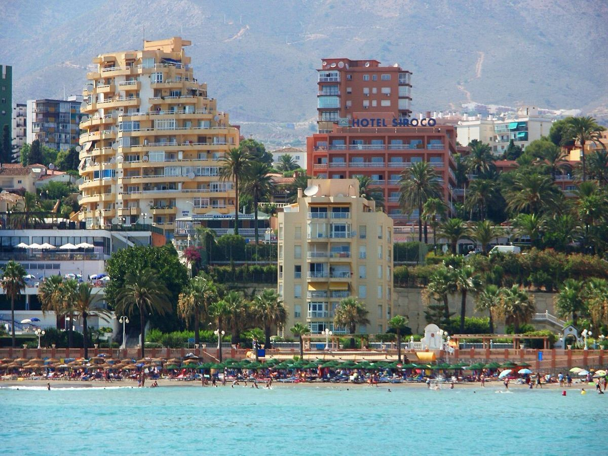
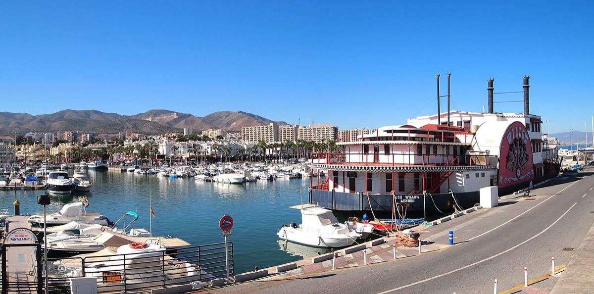
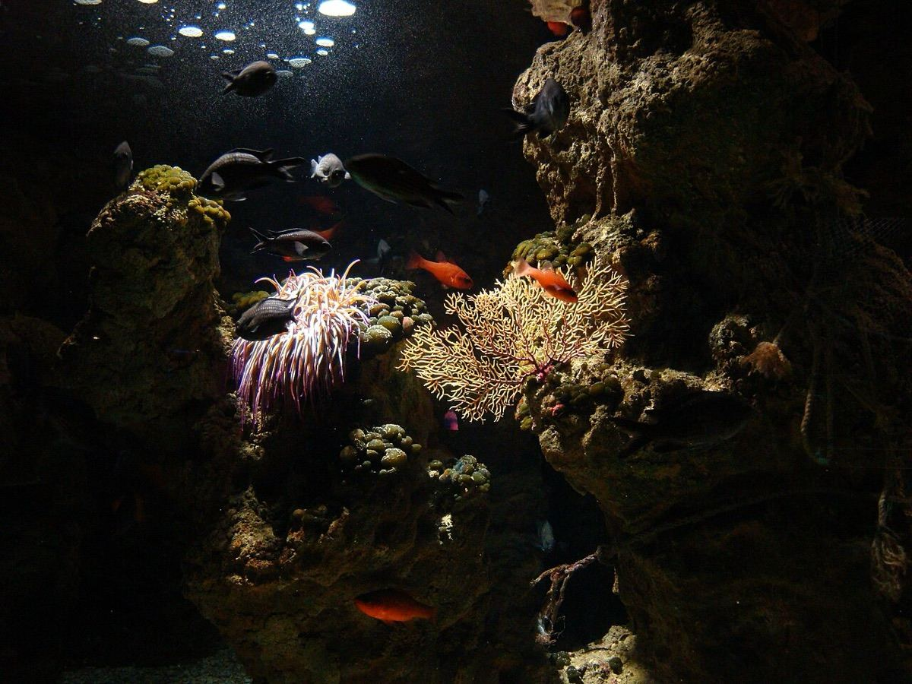
Hotel Best Tritón is in Benalmádena, not Roquetas, and the August 2026 "4 of 6 lifts broken" report matches no review corpus: no 2025–2026 review at either Best Tritón (Benalmádena) or Hotel Best Roquetas mentions an outage pattern, only slow-wait grumbling. Lift reliability at Best Tritón is an open question.
The replacements: hotel backup Mac Puerto Marina (4.4/5 from 3,952 reviews; walk-in showers available on request; flat marina/beach location; staff praised for mobility help — the shower room must be requested and confirmed), and the apartment "3 bedroom modern apartment in the heart of Benalmádena" in Arroyo de la Miel (3BR/2BA, 1st floor with elevator AND ramp — the best accessibility statement of the whole apartment sweep; communal pool; 10-minute walk to the beach and 10-minute walk to the train station; 10/10). No price published for the apartment; license not shown.
The town case still stands: Sea Life aquarium, Selwo Marina and the Teleférico cable car are the densest children's attractions of any town, and the airport transfer is the shortest. The catch is unchanged: only the flat coastal strip near Puerto Marina works — the hillside village and the uphill district around Arroyo de la Miel station must be excluded. Totality is 2m54s, shorter than Fuengirola, La Cala or Estepona.
- For: densest concentration of children's attractions among the finalists; new hotel and apartment candidates with the strongest accessibility evidence found; shortest airport transfer; flat, short walks from the coastal-strip properties.
- Against: only the flat coastal strip works — hillside addresses must be excluded; no candidate has a published 2027 price; Best Tritón's lift reliability is unresolved, so it needs a live re-check before it can be booked; totality is the shortest of the Costa del Sol towns.
- Official tourism site: turismo.benalmadena.es
Accommodation options
Prices are Booking.com snapshots from 2026-09-20 for four adults and two children, for the 6- and 7-night windows around the eclipse (not the 9-night window used in earlier research). Where a listing excludes 10% VAT, the VAT-inclusive total is an estimate. None of these is a quote from the property. AEHCOS sources reported hotels planned to finalize 2027 rates around November 2026.
Hotel Best Triton — no longer the default (downgraded)
Lift reliability is an unresolved open question (see Summary). The prices below are kept as a dated snapshot only.
Avenida Antonio Machado 29, on the flat strip near Plaza Olé, a few steps (about 18 m, measured) from Playa Malapesquera; Booking's own listing gives 200 m, its figure for the same walk. Review score 8.6 "Excellent" from about 1,963 reviews. Candidate: two Double Rooms, 26 m² each, two double beds. Three outdoor pools, including a kids' splash pool. Nine-floor main building plus a five-floor annex; a lift is stated but not confirmed to serve every floor, and the number of flights to a given Double Room isn't published. Extra beds are not allowed (official site).
| Stay | Nights | Total, incl. VAT (est.) | Terms |
|---|---|---|---|
| 29 Jul – 4 Aug | 6 | About €4,927 | Free cancellation before 24 Jul 2027; nothing paid until 22 Jul 2027 |
| 29 Jul – 5 Aug | 7 | About €5,642 | Same terms |
| 31 Jul – 7 Aug | 7 | About €5,561 | Free cancellation before 26 Jul 2027; nothing paid until 24 Jul 2027 |
| 31 Jul – 3 Aug | 3 | Not offered | "No availability" for this window |
- Bathroom: fully unconfirmed. The official site says only "full bathroom," no bath/shower distinction, and third-party summaries contradict each other — less documented than any other leading hotel checked.
- Room adjacency: no published policy. A two-room "Suite" (up to six, two doubles plus a king) is sold as a family product, but it's a different, pricier product from the candidate two-Double-Room configuration.
- Breakfast is included in some rates and a €15-per-person supplement in others; not included in the total above. AC is a room amenity; individual control isn't stated. No eclipse-week surcharge or minimum-stay rule was found.
Diana 2 ("Exclusive 3BR Near Beach & Puerto Marina") — the apartment alternative
Calle Tamarindos 1, about 90 m from Best Triton, on the 8th floor with a confirmed lift. Review score 9.2 "Wonderful", but from only 13 reviews. About 90 m² (969 ft²), three bedrooms (queen, queen, two twins), sea view, kitchen. Booking's room table lists 3 bathrooms; the host's own description reads closer to "2.5" (a full bathroom, a separate toilet, and a second shower) — flagging the discrepancy rather than resolving it. AC in every bedroom per a guest review. About 100 m to Malapesquera beach, 435 m to a Carrefour Market.
| Stay | Nights | Total as shown | Terms |
|---|---|---|---|
| 29 Jul – 4 Aug | 6 | Not offered | Refused: "You need to stay 7+ nights to book your selected dates" |
| 29 Jul – 5 Aug | 7 | €5,100 (incl. €150 cleaning fee) | Free cancellation before 17 Jun 2027; nothing paid until 15 Jun 2027 |
| 31 Jul – 7 Aug | 7 | €4,852 (incl. €150 cleaning fee) | Free cancellation before 19 Jun 2027 |
| 31 Jul – 3 Aug | 3 | Not offered | Same 7-night minimum message |
A genuine 7-night minimum, confirmed by Booking's own refusal message. It has a kitchen and, per Booking, three bathrooms — real comfort advantages over Best Triton's two split hotel rooms — but its cancellation deadline is about five weeks earlier (mid-to-late June vs. late July), locking in the commitment sooner, and its 9.2 review score rests on only 13 reviews against Best Triton's 1,963. VAT treatment on the total wasn't confirmed.
"3 bedroom modern apartment in the heart of Benalmádena" (Arroyo de la Miel) — leading apartment candidate
3BR/2BA, 1st floor with elevator AND ramp — the best accessibility statement of the whole apartment sweep. Communal pool. 10-minute walk to the beach and 10-minute walk to the train station. 10/10. No price published; license not shown. (See Summary.)
Mac Puerto Marina — leading hotel candidate
4.4/5 from 3,952 reviews. Flat marina/beach location; walk-in showers available on request; staff praised for mobility help. The shower room must be requested and confirmed. No August 2027 rate found yet. (See Summary.)
Ruled out or not yet offered
- Medplaya Hotel Bali: explicitly hillside by its own description — excluded regardless of price.
- Hotel Las Arenas: flat, beachfront at Santa Ana. Only a 9-night snapshot exists (about €7,352 for 29 Jul – 7 Aug, checked 2026-09-19); no 6–7-night price was checked.
- MedPlaya Hotel Alba Beach: cheapest fully-refundable hotel found, but only a 9-night snapshot exists (about €5,537, checked 2026-09-19); no 6–7-night price was checked. Sits at the Torrequebrada end, likely farther from Puerto Marina.
- Hotel Mac Puerto Marina, Sunset Beach Club, Estival Torrequebrada: plausible candidates (Sunset Beach Club has a confirmed walk-in shower on one tier) but no Aug 2027 rate found for any. Mac Puerto Marina is now a leading hotel candidate — see above.
- El Descanso villa: 5BR/5BA, walk-in showers and an "elderly and disability suitable" claim advertised, near the beach. Only a generic aggregator benchmark (~$685/night) exists, not a dated quote, and the accessibility claim is marketing copy, unverified.
- "Luxury in Puerto Marina" apartment: only one confirmed bathroom, short of the two-bathroom need.
- Benalmádena Palace: its own site says beachfront; a third-party source places it in the hillside district. Unresolved, so not treated as a candidate.
Links
Photos of each property are on its own site or listing; they aren't copied here. Booking.com links open with the family's dates and party filled in; nothing is booked by opening them.
Eclipse viewing
- Totality on this stretch: 2m54s, about 10:47:30–10:50:24 CEST on 2 August 2027 (module A, IGN-anchored, accurate to about ±2 s) — shorter than Fuengirola (3m06s), La Cala (3m21s) or Estepona (3m37s).
- Sun at about 39° altitude, 97° azimuth, just south of due east.
- Walking viewpoint for both properties: Playa Malapesquera (36.5949, -4.5181) — 18 m from Best Triton, 100 m from Diana 2.
- No obstruction found: the nearest building in the sun's direction is 297 m away, and even the tallest tagged building within 500 m (30 m) would need to be within about 38 m to block the sun at this altitude. OSM height data is incomplete, so an untagged tall building can't be fully ruled out.
- Beaches are public, need no reservation; expect heavy August crowding. No driving needed on eclipse day.
- Map: Playa Malapesquera on Google Maps
Getting there and around
- From the airport: a pre-booked minivan for six, about €68–79 each way (2026 prices). A standard taxi carries four, so six people need two, or one larger pre-booked vehicle at similar cost. The C1 train (€2.05/adult, step-free) is cheaper but impractical on arrival day — it lands at Arroyo de la Miel, 3.17 km from the coastal-strip properties, not at the beach.
- Arroyo de la Miel station: 3.17–3.18 km, about 52 minutes on foot, 50–55 m of net climb (about 102 m cumulative on the winding return route) — a taxi trip, not a walk, with luggage. Fine for the train later in the stay, unencumbered.
- Daily life: nearest supermarket (Carrefour Market) is about 435–446 m, a 7–8 minute walk crossing Avenida Antonio Machado via a roundabout with pedestrian crossings, not an at-grade highway crossing. About 22 restaurants and cafés within 400 m, a smaller cluster than Fuengirola's.
- Stairs near Plaza Olé: 23–24 mapped stairways within 500 m, far more than at the Fuengirola properties. None fall on the routed paths to the beach or supermarket, but the density is worth a personal check before exploring further.
- Avoid: Torremuelle (6.6 km from Puerto Marina, a real hill) and Benalmádena Pueblo (a separate hillside village) are not part of this recommendation.
- Andalusian tourist tax: none; the region has ruled one out. Portugal leg: see the Portugal–Spain travel facet.
Beach and children
- Sea Life aquarium is about a 5-minute walk from Puerto Marina; Selwo Marina is about a 25-minute walk or a short taxi/bus ride (roughly 3 km); the Teleférico cable car is near Arroyo de la Miel station. This is the strongest concentration of walkable or short-taxi children's attractions among the finalists.
- Tivoli World, once the area's flagship attraction, is closed; reopening has been proposed for 2028–2030, so it's unavailable in 2027 regardless.
- Torrebermeja–Santa Ana, Carvajal and Fuente de la Salud beaches held Blue Flag status in 2026.
- How gently the beach shelves near Puerto Marina isn't documented here; the broader central Costa del Sol is generally described as sand with a gentle entry, but no Benalmádena-specific measurement was found.
- A Benalmádena Pueblo romería reportedly falls on 2 August — unverified, and concerns the inland Pueblo, not the coastal strip.
- Websites: Sea Life Benalmádena, Selwo Marina, Teleférico Benalmádena (cable car)
Access for grandmothers
- From the coastal-strip properties, the routes to the nearest supermarket and beach are flat and under 450 m.
- A lift is helpful but not required, as long as any stairs amount to one flight; more than one flight without a lift fails. Diana 2 sits on the 8th floor with a confirmed lift, so this isn't a concern there. The Arroyo de la Miel apartment is 1st floor with elevator and ramp. Best Triton has a lift, but which floor either Double Room sits on, and whether the lift reaches it, isn't published — and lift reliability there is now an open question (see Summary).
- Mac Puerto Marina: staff praised for mobility help; walk-in shower must be requested and confirmed. Best Triton's bathroom type is fully unconfirmed. Diana 2's bathroom count is unresolved between Booking (3) and the host's own text (closer to 2.5).
- The real access issue is the train station, covered above: a taxi, not a walk, whenever it's needed. The stairways mapped near Plaza Olé (also above) don't sit on the routine routes but are worth checking in person before exploring further.
- Against the family's stated limit (some stairs are fine but not many; a gentle 10-minute climb is fine), the coastal strip passes and the walk up to the station does not.
Heat, weather and sea
- Terral: the same hot, dry wind that affects Fuengirola affects this stretch — named among the areas to avoid on terral days, which can push temperatures toward 40°C and occasionally above, roughly 5–6 episodes a summer lasting 1–2 days each. AC in every bedroom matters; present but not confirmed as individually controlled at either leading property.
- Sea: typically about 24–26°C in August, warmer and steadier than the western Costa del Sol, though not immune to sudden cold-water events — a Málaga buoy recorded a drop to 15.6°C in August 2026.
- Eclipse-day weather: climatology favours this Mediterranean coast over the Atlantic side, but that's not a forecast.
- Fiesta: Benalmádena Pueblo's feria runs 12–16 August 2026, after the travel dates, and concerns the inland Pueblo rather than the coastal strip.
Open questions
- Do the Double Rooms at Best Triton have a walk-in shower or a bath? Can a specific type be requested?
- Can the two Double Rooms be placed on the same floor or adjoining? How many flights of stairs, if any, separate them from the lift, and does the lift serve every floor of both the main building and the annex?
- Is air conditioning individually controlled in-room at Best Triton, or centrally controlled?
- Is Best Triton's two-room Suite available for these dates, and what does it cost against two separate Double Rooms?
- Does Best Triton anticipate any eclipse-week terms — a minimum stay, a surcharge, or a rate not yet released for 2027?
- Diana 2's exact building location is a street-level approximation, not a confirmed building centroid.
- Whether Hotel Mac Puerto Marina, Sunset Beach Club or El Descanso post a suitable, dated 2027 offer when rates load in November.
- Whether Benalmádena Palace is on the flat coastal strip or in the hillside district, and whether the 2 August romería is real.
Sources
Vault notes (names only):
- Eclipse-2027-Shortlist-Synthesis-2026-09-19 (current state)
- Eclipse-2027-Comfort-Check-Costa-del-Sol-2026-09-21
- Eclipse-2027-Module-E-Benalmadena-2026-09-19
- Eclipse-2027-Module-E-Live-Check-2026-09-19
- Eclipse-2027-Short-Stay-Check-2026-09-20
- Eclipse-2027-Leading-Hotels-Direct-Check-2026-09-20
- Eclipse-2027-Module-F-Finalists-2026-09-20
- Eclipse-2027-Gap-Walkability-Measurements-2026-09-19
- Eclipse-2027-Gap-Summer-Beach-Conditions-2026-09-19
- Eclipse-2027-Module-C-Central-Comparison-2026-09-19
- Eclipse-2027-Module-A-Eclipse-Geography-2026-09-19
External:
Cádiz
Contender
A flat city on a peninsula: promenade beaches, full medical and transport infrastructure, and genuinely walkable old town. The apartment lane is strong here — a ground-floor 3BR and a lift-served 3BR/3BA — plus a TUR4all-verified Parador.
- For: flat everywhere; two apartment options that sleep six under one roof; full city infrastructure; 2m54s of totality.
- Against: heaviest eclipse crowds are expected in Cádiz; historic-center parking is described as "un INFIERNO" with resident-only zones; the Parador skews adult and needs 2–3 rooms.
Accommodation options
All prices are non-eclipse signals checked 2026-09-21. No August 2027 pricing is published anywhere. Nothing booked or contacted.
"Authentic Cadiz experience, historic centre" (Airbnb), old town
3BR (3 double beds), sleeps 6: parents, grandmothers, and kids each get a double; bunk bed rated 6+ in the kids' room. Ground floor — 3 steps only. Kitchen + washer + dishwasher + microwave. No pool. 5-min walk to seafront, shops, and restaurants; large private patio (rare in Cádiz). License VUT/CA/068041. 4.9/5, ~445–451 reviews. Red flags: bath count unstated; ground-floor street noise possible (host says rooms away from street); no price signal in the research.
Casa Plaza San Antonio, historic center
3BR/3BA, 200m², sleeps 6. Lift confirmed. Kitchen + washer + dishwasher + oven; terrace; laundry service. No pool. Cathedral 6-min walk, La Caleta 12 min, Plaza de las Flores 5 min, market nearby. From ~£226/night non-eclipse. 9.7/10, 38 reviews. Red flags: €200 damage deposit payable in cash only; bed sizes not itemized — confirm.
Parador de Cádiz
Seafront, 124 rooms, renovated. TUR4all-listed: entrance stairs plus independently usable ramp, 2 adapted rooms, ground-level/roll-in shower with grab bars, adjustable head, fixed seat, lift. Children's pool, playground, interconnecting/family rooms — but it skews adult. Six needs 2–3 rooms (~€500–900/night in August, non-eclipse signal). Caveat: bathroom lacks a 150 cm turning circle.
Eclipse viewing
- Totality in Cádiz: 2m54s, around 10:45–10:52am CEST on 2 August 2027. Durations are representative (sources disagree ±10–20s).
- No viewing point was measured for Cádiz. Beaches (La Caleta, the promenade) are public and need no reservation.
- Heaviest eclipse crowds are expected in Cádiz — plan to be in position early.
- Morning marine-layer risk on the Cádiz Atlantic coast; keep a mobile viewing plan.
Getting there and around
- Nearest airports are Jerez (XRY) or Málaga (AGP). Drive times were not checked in this research — verify with a route planner.
- Full city infrastructure: medical, transport, shops, restaurants. The city is flat and the old town is walkable.
- Historic-center parking is "un INFIERNO" with resident-only zones — do not plan to rely on a car in the old town.
Beach and children
- Promenade beaches: La Caleta is a 12-min walk from Casa Plaza San Antonio; the seafront is 5 min from the Airbnb apartment.
- The Parador has a children's pool and playground. No kids' club evidence at the apartments.
- How gently the beaches shelve is not documented in this research.
Access for grandmothers
- The Airbnb apartment is ground floor with 3 steps only. Casa Plaza San Antonio has a confirmed lift. The Parador is TUR4all-verified with ramp and adapted rooms.
- Flat city throughout; the old town is walkable on foot.
- Shower types at both apartments are unstated — confirm directly.
Heat, weather and sea
- Cádiz Atlantic coast: ~85–90% favorable around 10:45am by climatology, with a morning marine-layer fog caveat. Climatology is not a forecast.
- Atlantic sea is cooler than the Mediterranean; August air temperatures are typical southern-Spain heat.
Open questions
- Eclipse-week availability and pricing everywhere — Cádiz hoteliers are already blocking Aug 2027 platform bookings per the sweep.
- Bath count at the Airbnb apartment; shower types at both apartments.
- Parador room configuration for six.
Sources
Vault notes (names only):
- Eclipse-2027-Corridor-Sweep-2026-09-21
- Eclipse-2027-Hotel-Re-Run-2026-09-21
- Eclipse-2027-Apartment-Sweep-2026-09-21
Almuñécar
Contender
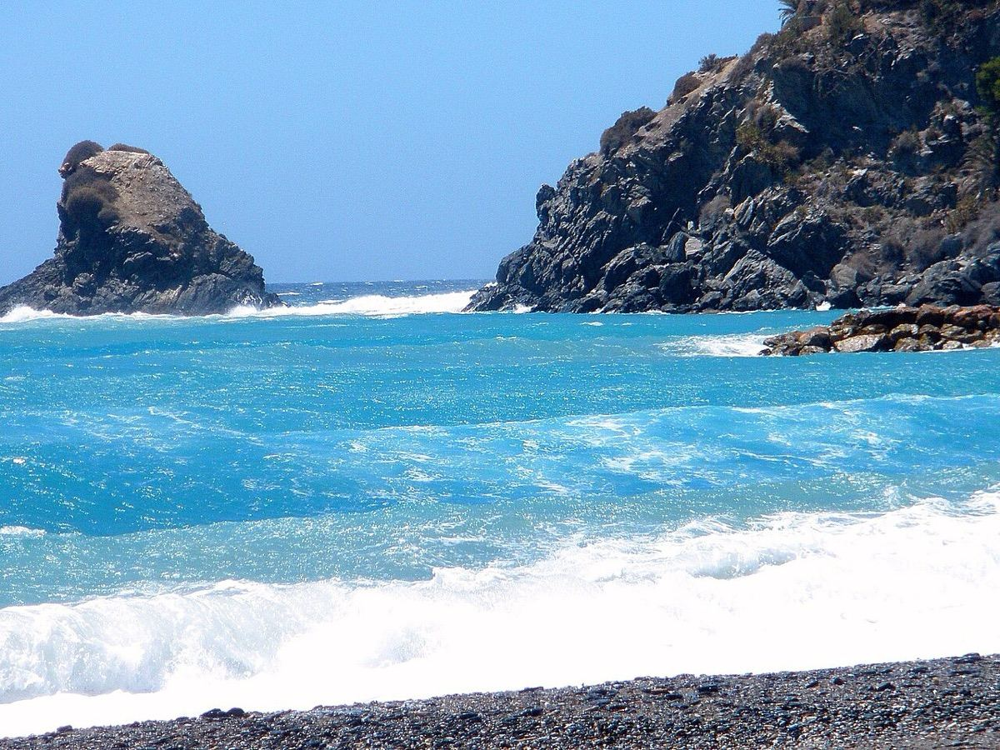
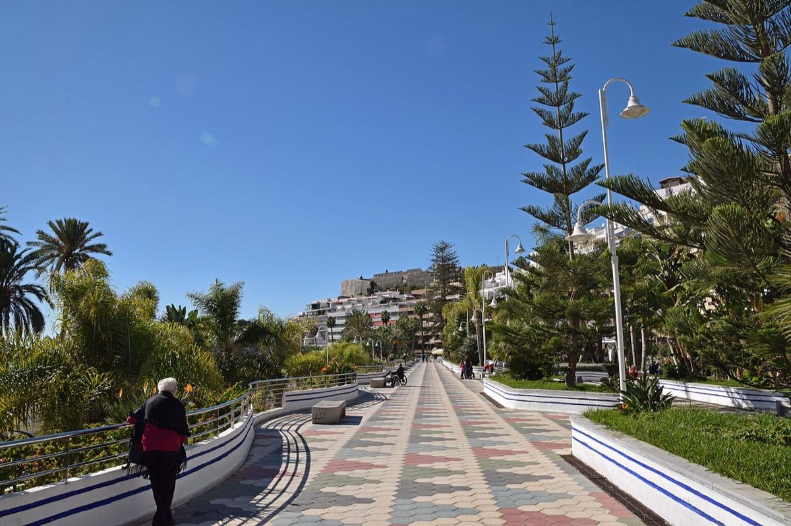
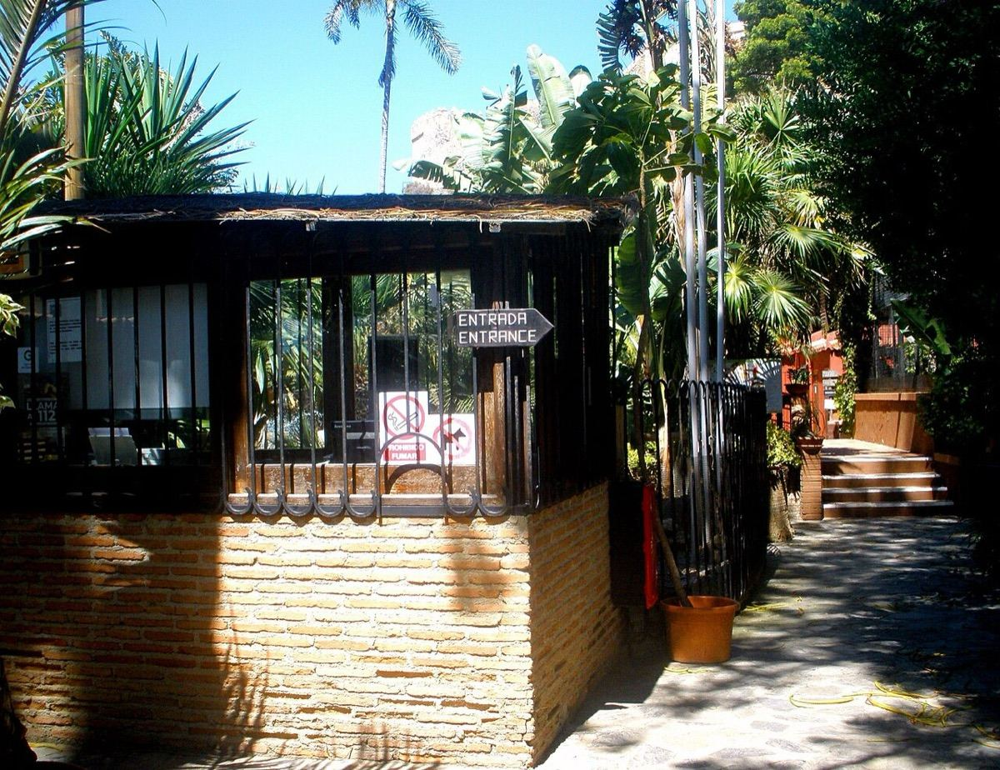
A distinct, non-resort Spanish town on the Costa Tropical. Hotel Helios Costa Tropical is the strongest-reviewed hotel in the whole research: 4.8/5 from 4,975 reviews, with exceptional service, food and cleanliness. Shower and lift remain unverified; Helios has already set an eclipse-week minimum stay per its director in the Spanish travel press — the only dated, property-specific eclipse policy found. The earlier ~€5,190/6-nights partly-refundable figure is recorded in the dated sections below.
The villa option is just down the coast: Villa Royal, Salobreña — 4BR/4 en-suite, step-free entrance ("enter the villa without any steps"), private heated infinity pool 12×4.5 m with a child safety gate available on request, communal playground/paddle/football a 2-minute walk. No reviews and no price signal found.
The trade-offs are unchanged: every beach next to the hotels is dark sand and gravel, not the gently shelving sand the family prefers (Calabajío, the one confirmed easy-entry beach, is a bus or car trip away); over an hour from Málaga airport with no train; totality is 1m51s, about 75 seconds shorter than Fuengirola. No viewing-spot check has been done here.
- For: the best-reviewed hotel found, with a spa and 29 m² rooms; a distinct non-resort-strip Spanish town; a water park and bird park in town; the villa pick is step-free with a heated pool.
- Against: gravel beaches at the hotel; shower and lift unverified at Helios; the villa has no review or price evidence; long transfer, no rail; short totality.
- Official tourism site: www.almunecar.es
Accommodation options
Prices are Booking.com snapshots from 2026-09-20 for four adults and two children (entered as ages 6 and 8). Where a listing excludes 10% VAT, the VAT-inclusive total is an estimate (list price × 1.10). Neither of these is a quote from the property. AEHCOS sources reported hotels planned to finalize 2027 rates around November 2026.
Hotel Helios Costa Tropical
Two Triple Rooms (29 m² each), each with its own bathroom and air conditioning, sleeping 3 each (3 twin beds, or 2 full beds as an alternate configuration). On the front line of San Cristóbal beach, about a 10-minute walk to the old town. The hotel has a spa/wellness centre with massages.
| Stay | Nights | Total, incl. VAT (est.) | Terms |
|---|---|---|---|
| 29 Jul – 4 Aug | 6 | About €5,190 | Partially refundable (deadline not shown); breakfast €15 pp/day extra |
| 29 Jul – 5 Aug | 7 | About €5,239 | Same |
| 31 Jul – 7 Aug | 7 | About €5,353 | Same |
| 31 Jul – 3 Aug | 3 | Not offered | "No availability" for this window, checked 2026-09-20 |
- Review score 9.3 "Wonderful" from about 3,018 reviews, the strongest base of any Almuñécar property found.
- Has already set a minimum stay for the eclipse dates, to block single-night bookings, per its director quoted in the Spanish travel press; he says demand has grown but availability remains (Preferente, Sep 2026) — the only property-specific, dated eclipse policy found in this research.
- Lift and walk-in shower: unresolved. A 10th-floor bar implies a multi-floor building, but no source states a lift; bathrooms are described only as "attached."
- Splits the party across two standard rooms rather than one larger unit.
Hotel Toboso Almuñécar
Two Triple Rooms with Terrace (16 m² each), each sleeping 3 on 3 twin beds, breakfast included. About 300 m from Puerta del Mar beach; recently renovated (January 2024, confirmed by both the hotel and Booking).
| Stay | Nights | Total, incl. VAT (est.) | Terms |
|---|---|---|---|
| 29 Jul – 4 Aug | 6 | About €4,365 | Non-refundable; "We have 2 left" at this rate, checked 2026-09-20 |
| 29 Jul – 5 Aug | 7 | About €4,752 | Same terms |
| 31 Jul – 7 Aug | 7 | About €4,694 | Same terms |
| 31 Jul – 3 Aug | 3 | Not offered | "No availability" for this window, checked 2026-09-20 |
- Among the lowest prices found, but the rooms are small (16 m²) and the rate is non-refundable ten months before the trip, with only two rooms left at this rate.
- Review score 8.7 "Excellent" from about 1,686 reviews.
- Lift and walk-in shower: unresolved, same gap as Hotel Helios.
Ruled out or not yet offered
- Hotel Suites Albayzín del Mar: the only property found that could house the whole party in one unit — a 3-bedroom suite sleeping up to 6, with a full kitchen. Reported as roughly 1.5 km from the Puerta del Mar/San Cristóbal core, farther than the other candidates and needing confirmation. No 2027 price found.
- Ibersol Almuñécar Beach & Spa: a large 4-star beachfront hotel comparable to Helios, about 550 m from Puerta del Mar. No 2027 price found.
- Hotel Casablanca, Hotel Playa San Cristóbal, Hotel Goya, Aparthotel Turismo Tropical: address-verified, on or near San Cristóbal beach, but no 2027 price found, only generic off-season benchmarks.
- Apartamentos APAL Chinasol, Tropysol apartments: whole-unit rentals on the seafront, but no fully verified villa-style candidate turned up; the units found rely on a sofa bed or single bed to reach six. No 2027 price found.
Links
Photos of each property are on its own site or listing; they aren't copied here. Booking.com links open with the family's dates and party filled in; nothing is booked by opening them.
Eclipse viewing
- Totality at Puerta del Mar: 1m51s, from about 10:49:04 to 10:50:55 CEST on 2 August 2027 (module A, anchored to IGN town figures, accurate to about ±2 s). The sun is at about 40° altitude and 98° azimuth, about 75 seconds shorter than Fuengirola's 3m06s.
- No viewing-spot or obstruction check has been done for Almuñécar. Module F checked viewing points only for the four finalist properties in Fuengirola and Benalmádena.
- Map: Playa Puerta del Mar on Google Maps
Getting there and around
- From Málaga airport: about 1h+ by car (roughly 80 km). No rail line reaches Almuñécar. A direct Alsa coach runs from the airport to Almuñécar/La Herradura, about 5 departures a week (Monday–Friday) per one source plus a reported daily "Supra" service; the journey takes about 2h, slower than driving because of stops. Group minivan or private-transfer availability for this route was not confirmed the way it was for the Costa del Sol towns.
- In town: urban bus line 3 (Estación de Autobuses–Taramay route) runs past the San Cristóbal seafront and out to Calabajío beach.
- Portugal leg: see the Portugal–Spain travel facet. Flying into Málaga still suits this area, at the cost of the extra hour of driving.
Beach and children
- Puerta del Mar, San Cristóbal and Caletilla — the beaches next to every candidate hotel — are dark sand and gravel. San Cristóbal is described by the town hall's own service sheet as "arena-grava" (sand-gravel), dark and medium-grained with fine local gravel. Caletilla is dark sand, boulders, gravel and pebbles, much of it artificially placed in 2015.
- Calabajío, the one confirmed gently-shelving beach, is about 3.3 km away (straight-line distance) and reachable by urban bus line 3 or by car; it has disabled-access provision per the town hall. A foot-routing check found no direct coastal path, only a hillside route with a 225 m climb each way and a 20% sustained pitch — possibly a routing artifact, but either way a bus-or-car trip, not a walk.
- Aquatropic (water park) is in town on the coastal Paseo Reina Sofía. Its walking distance from Puerta del Mar was checked, but the elevation data returned was erratic and is flagged unreliable.
- Loro Sexi (bird park) is about 1.2 km from Puerta del Mar, with a confirmed moderate climb (12% sustained over about 150 m). High-season hours (July–August) are published as daily 10:30–13:30 and 18:00–21:00.
- No 2027 Feria date has been published; the patronal festival has run 9–15 August in recent years, which would begin after the family's planned check-out if the pattern holds — inferred from history, not confirmed for 2027.
- Websites: Aquatropic water park, Loro Sexi bird park
Access for grandmothers
- Neither Hotel Helios nor Hotel Toboso confirms a lift or a walk-in shower. Under the family's rule, that gap only matters if a candidate Triple Room sits above the first floor — neither hotel publishes room-level floor plans, so this is unresolved rather than disqualifying.
- Both hotels sit on flat seafront ground; the walk between them and San Cristóbal/Puerta del Mar beach is flat.
- The route to Loro Sexi has a confirmed, moderate climb. The route to Calabajío is a flat bus/car trip, or on foot a climb that needs verifying before it can be ruled manageable.
- No accessibility survey was found for either hotel.
Heat, weather and sea
- Terral: the least terral exposure on this coast is documented for the Nerja–Torrox stretch, named in sources as the recommended zone on terral days, running 3–5°C cooler than Marbella/Torremolinos during an episode. No terral-equivalent hot wind is documented for the Costa Tropical, Almuñécar's stretch — an absence of evidence, not confirmation that Almuñécar never experiences one.
- Sea: the Costa Tropical's microclimate is described as shaped more by mountain shelter than by the sea-temperature swings documented further west. Secondary sources put nearby Motril/Salobreña August averages in the mid-20s to about 28°C, but they disagree enough to leave the figure unpinned for Almuñécar specifically.
- Puerta del Mar, San Cristóbal and Velilla beaches held Blue Flag status in 2026, alongside La Herradura and Marina del Este.
- No jellyfish or beach-by-beach water-quality data specific to Almuñécar was found.
- Eclipse-day weather: not separately assessed for the Costa Tropical; the climatology source used elsewhere in this research stops its detailed commentary at the Alborán coast around Marbella.
Open questions
- Lift and walk-in shower at Hotel Helios or Hotel Toboso, and — more importantly under the family's rule — which floor the candidate Triple Rooms are on.
- Whether the Calabajío walking route's 225 m climb is real terrain or a routing artifact; Aquatropic's walking distance and climb was also flagged unreliable.
- A viewing spot and sun-obstruction check for Almuñécar, as done for the Fuengirola and Benalmádena finalists.
- Hotel Suites Albayzín del Mar's actual distance from the Puerta del Mar/San Cristóbal core — the only property found that fits the whole party in one unit with a full kitchen.
- Whether Hotel Helios's minimum-stay rule affects the family's planned stay length, and its actual cancellation deadline.
- The 2027 Feria date and any 2027 Aquatropic opening date, both inferred only from past years' patterns.
Sources
Vault notes (names only):
- Eclipse-2027-Shortlist-Synthesis-2026-09-19 (current state)
- Eclipse-2027-Comfort-Check-Other-Areas-2026-09-21
- Eclipse-2027-Module-E-Almunecar-2026-09-20
- Eclipse-2027-Module-E-Round2-Live-Check-2026-09-20
- Eclipse-2027-Short-Stay-Check-2026-09-20
- Eclipse-2027-Module-D-Eastern-Alternatives-2026-09-19
- Eclipse-2027-Gap-Walkability-Measurements-2026-09-19
- Eclipse-2027-Gap-Summer-Beach-Conditions-2026-09-19
- Eclipse-2027-Gap-Regional-Access-2026-09-19
- Eclipse-2027-Module-A-Eclipse-Geography-2026-09-19
External:
Nerja
Contender
Axarquía coast town, whitewashed, with 300+ restaurants and family beaches (Burriana). In the path with 1m32s totality (sweep figure; representative). Confirmed in-path by timeanddate, Espenak/NASA, and the Junta de Andalucía's official 115-municipality list — an earlier travel source claiming Nerja was outside the path was wrong.
Beaches drop off fast — not as gentle for small kids as Cádiz sand. Stay at beach level; the old town and coves are steep. The hotel bench is led by one resort with a verified sleep-6 unit; the apartment bench has one strong pick and one thin one.
- For: in the path; the only Nerja property verified to sleep 6 in one unit; a real town with 300+ restaurants; excellent weather odds.
- Against: shortest totality of the corridor's surviving towns; beaches drop off quickly; rooms "tired" at the lead hotel; 3.5 km from old town at that hotel.
- Official tourism site: none verified in this research pass.
Accommodation options
All prices are non-eclipse signals checked 2026-09-21. No August 2027 pricing exists. Assume eclipse premiums and 7-night minimums.
Ona Marinas de Nerja (Playa El Playazo)
Hotel re-run #6. 4.0 Tripadvisor (~2,500+), Trivago 8.2/10 (11,223). Mini club + games area, supervised day-and-night entertainment, separate children's pool, lagoon pool, beachfront, all-inclusive option. "Overall I would say this is a family resort rather than a couples one" (June 2025, direct read). Sleep-6: standard 2BR apartment (4 twin beds + double sofa bed, 60m², kitchenette) — the only Nerja property verified to sleep 6 in one unit. ~€196/night B&B, ~$379–391/night all-inclusive, non-eclipse. Caveats: rooms "tired" per 2025–26 reviews; ~3.5 km from old town — beach zero-friction, town by hourly bus (~€1) or taxi (~€7.50), a real walk on foot.
Backups
- HC Burriana Playa: 4.4, beachfront Burriana, 2BR apartments with kitchens and washers, kids 3–10 stay free, roof-terrace pool, lift. Needs two apartments; no kids' club. Best town-based option.
- Hotel Balcón de Europa: 4.3, superb old-town location, but two rooms needed — no sleep-6 unit, no kids' club.
Apartments
- #4 "First-Line apartment above Carabeillo/Burriana" (Vrbo): 3BR/2BA, sleeps 6 (one queen per bedroom). 2nd floor, NO lift — 19 steps, one flight, within limits; luggage a factor. Kitchen + dishwasher + washing machine; sea-view terrace. Communal pool open all year + sea views. Burriana Beach 2 min, Balcón de Europa 11 min, flat walk to center. From ~$168/night non-eclipse (Nov 2026 incl. fees). 9.6/10, 42 reviews — Aug 2026 verified: "We were a family of 6 (2 young children, 2 parents and 2 grandparents) and thoroughly enjoyed our stay… plenty of room." Red flags: only one bathroom has a shower; street parking nearly impossible (no car needed for daily life).
- #10 "Nerja Sun Apartment Jabega Torrecilla" (Airbnb): 3BR/2 baths, sleeps 6 (two doubles + two singles). Dead-flat Torrecilla: beaches, Balcón, restaurants/tapas/supermarkets all on foot. Thinnest evidence of the top 12 — floor/lift/laundry all unverified; only 5.0/2 reviews on this unit.
Not available or ruled out
- Parador de Nerja: closed for renovation (~€13M, closed Oct 2025, ~2 years); unlikely to reopen before ~Oct 2027.
- Riu Monica (Nerja): verified Adults Only.
- Toboso Apar-Turis is in Nerja (not Roquetas): the cancellation-to-reprice allegation has zero 2025–26 corroboration. The flag stays but is thin — re-examine the original source link before it blocks anything.
Eclipse viewing
- Totality: 1m32s (representative estimate), about 10:45–10:52am CEST on 2 August 2027.
- Beachfront viewing from Playa El Playazo or Burriana needs no driving on eclipse day.
- Shorter duration than the western towns — totality ranks last as a criterion.
Getting there and around
- Málaga airport: about 50 min by road (approximate).
- Ona Marinas is ~3.5 km outside town: beach days need no car; town trips by hourly bus (~€1) or taxi (~€7.50).
- Apartment #4 is walkable: Burriana Beach 2 min, Balcón de Europa 11 min, flat walk to center.
Beach and children
- Burriana is the family beach; beaches drop off fast — less gentle for small kids than Cádiz sand.
- Mini club + games area, day-and-night entertainment, separate children's pool, lagoon pool at Ona Marinas.
- The Caves of Nerja are a possible half-day excursion but are not flat terrain for grandmothers.
Access for grandmothers
- Apartment #4: 19 steps, no lift — verified family-of-6 stay including grandparents (Aug 2026), so within tolerance; luggage a factor.
- Ona Marinas: six lifts, but accessibility reports conflict (amimir: common-areas access only; voyage-prive: not accessible for reduced mobility) — confirm directly.
- HC Burriana Playa: lift, roof-terrace pool.
- Base at beach level; avoid the steep old town and coves as a base.
Heat, weather and sea
- Axarquía coast ~90–95% favorable climatology around 10:45am — not a forecast.
- August heat strong; pools and shade matter.
- Morning marine-layer risk is lower on this Mediterranean stretch than on the Atlantic side.
Open questions
- Ona Marinas: confirm sleep-6 in one 2BR unit for August 2027; shower type; lift reliability; eclipse rates.
- Apartment #4: confirm which bathroom has the shower; August 2027 availability and cancellation terms.
- Apartment #10: verify floor, lift, laundry, and price.
- HC Burriana Playa: confirm two apartments are genuinely needed for six; August 2027 rates.
- Eclipse-week pricing everywhere — watch for August 2027 calendars to open.
Sources
Vault notes (names only):
- Eclipse-2027-Corridor-Sweep-2026-09-21
- Eclipse-2027-Hotel-Re-Run-2026-09-21
- Eclipse-2027-Apartment-Sweep-2026-09-21
- Eclipse-2027-Villa-Repass-2026-09-21
Sotogrande / San Roque
Viable
The only Mediterranean-side option in the west: a flat, modern, upscale golf-and-yacht area in the municipality of San Roque. This is villa territory — quieter than the Atlantic towns, the priciest lane, and car-dependent for daily life.
- For: about 4m15s of totality (estimate from the sweep); Mediterranean sea; flat modern terrain; villas with private pools and good grandmother layouts, including one with an internal lift.
- Against: priciest lane; a car is needed (restaurant 1.6 km and supermarket 4.8 km from the best-stair option); review evidence is thin — one option has zero reviews, another's August availability is genuinely ambiguous.
Accommodation options
All prices are non-eclipse signals checked 2026-09-21. No August 2027 pricing is published anywhere. Nothing booked or contacted.
Villa Luz, La Paloma, San Roque
5BR/5BA, sleeps 10. Internal lift serving all floors — the best stair solution of the villa set. Private 6×13m pool on a fenced 1,195m² plot; modern 2019 build. From ~€555/night non-eclipse. Red flags: residential La Paloma = car needed (restaurant 1.6 km, supermarket 4.8 km); easyreserve is a German aggregator and August min-stay is unconfirmed; no reviews found.
Villa Tres Palmeras, Sotogrande (gated, near Valderrama/La Reserva)
4BR, sleeps 8. Ground-floor king bedroom with wet-floor en-suite shower. Dedicated playroom (PS3, pool/snooker table, sofa/TV); private 4.8×9.5m pool; covered terrace dining for 8. Port/marina amenities nearby. Red flags: no price or reviews on the agency page; pool heating extra; fence unstated.
Ref. 7640811, Sotogrande Costa, Zone B, San Roque
5BR, sleeps 6+. Fenced pool — explicitly stated, which is rare. Renovated, new furniture; near beach. ~€3,500/week non-eclipse — the best price/bedroom ratio found. Red flags: the listing says "available for vacation rental from September" — August availability is genuinely ambiguous; 3 bathrooms for 5 bedrooms; no reviews; floor layout unstated.
Marriott Homes & Villas, Sotogrande Pier (3BR, ground floor)
Sleeps 6 in 3 bedrooms under one roof; ground floor — no stairs at all; both bathrooms have walk-in showers per the listing; 2 communal pools, gym, underground parking. Red flag: zero reviews found — experience quality is the open question.
Eclipse viewing
- Totality in Sotogrande: about 4m15s (estimate from the sweep; durations are representative, sources disagree ±10–20s), around 10:45–10:52am CEST on 2 August 2027.
- No viewing point was measured for Sotogrande. Beaches are public.
- Strait coast weather ~85–90% favorable by climatology, with a morning fog caveat — keep a mobile viewing plan.
Getting there and around
- A car is needed: public transport is limited, and the La Paloma villa is 1.6 km from the nearest restaurant and 4.8 km from the nearest supermarket.
- Nearest airports are Gibraltar or Málaga (AGP). Drive times were not checked in this research — verify with a route planner.
- The area is flat and modern; the port/marina has restaurants and amenities.
Beach and children
- Beaches are nearby (Playa de Sotogrande); the ref. 7640811 villa is near the beach and the marina amenities sit near Villa Tres Palmeras.
- Dedicated playroom at Villa Tres Palmeras; fenced pools at Villa Luz and ref. 7640811.
- SO/ Sotogrande Spa & Golf Resort runs a seasonal kids' club (Jul 1–Aug 31) and family pool — a fallback if the villas fall through.
Access for grandmothers
- Villa Luz has an internal lift serving all floors. Villa Tres Palmeras has a ground-floor king bedroom. The Marriott Pier unit is ground floor with no stairs at all.
- Floor layout at ref. 7640811 is unstated — verify before booking.
- Flat modern terrain throughout the resort area.
Heat, weather and sea
- Strait coast: ~85–90% favorable around 10:45am by climatology, with a morning fog caveat. Climatology is not a forecast.
- Mediterranean sea is warmer than the Atlantic; August air temperatures are typical southern-Spain heat.
Open questions
- August availability at ref. 7640811 (genuinely ambiguous) and min-stay terms at Villa Luz.
- Prices at Villa Tres Palmeras; floor layout at ref. 7640811.
- Whether the SO/ resort's kids' club fits the dates.
Sources
Vault notes (names only):
- Eclipse-2027-Corridor-Sweep-2026-09-21
- Eclipse-2027-Villa-Repass-2026-09-21
External:
- https://villasotogrande.net/holiday-rentals-Sotogrande.html (agency page for Villa Tres Palmeras)
- https://www.easyreserve.com/pets-allowed-villas_san-roque_andalusia_spain.html (Villa Luz listing)
- https://www.thinkSPAIN.com/holiday-rentals/7640811 (Sotogrande ref. 7640811)
Salobreña
Viable
Costa Tropical town (Granada coast) in the path, with about 1m40s of totality — an estimate; the sweep gives "~1m40s." The beach-level zone is flat with five beaches and fewer tourists than the Málaga coast. The steep hilltop old town must be avoided as a base.
Research evidence is thin: one strong villa pick and one cheap hotel candidate, both with gaps. This is a quieter, cheaper lane for a family that wants fewer crowds.
- For: in the path; step-free villa entrance verified in listing text; cheap hotel option at ~$68/night; fewer tourists.
- Against: no reviews or price found for the villa pick; thin hotel evidence; Costa Tropical beaches are mixed sand/gravel and drop off quickly.
- Official tourism site: none verified in this research pass.
Accommodation options
All prices are non-eclipse signals checked 2026-09-21. No August 2027 pricing exists. Assume eclipse premiums and 7-night minimums.
Villa Royal (Monte de los Almendros, Salobreña)
Villa re-pass #2. 4BR/4 en-suite + sofa bed, sleeps 10. Step-free entrance ("enter the villa without any steps," per the listing); grandmothers in two ground-floor rooms, parents/kids upstairs. Private heated infinity pool 12×4.5m with child safety gate available on request; table tennis; communal playground/paddle/football 2-min walk. Red flags: no reviews or price signal found; no pets. The biggest evidence gap in this town.
Hotels (beach level only)
- Hotel Salobreña Suites: 4.4/5 Excellent (218 reviews); children's pool + outdoor pool, arcade/game room, lift, wheelchair accessible; ~$68/night. Cheaper family alternative; shower type unverified; new candidate, thin evidence.
- Hotel Avenida Tropical: momondo lists "Walk-in shower," "Roll-in shower," "Adapted bath," but Expedia notes deep-soaking baths in some rooms — mixed stock. Lift; family rooms; kids' pool; free parking; ~$140/night. Pool existence conflicts across listings — verify.
Apartment
- Ocean Beach Salobreña (Airbnb, private host): 3BR/2 baths, right on Playa de la Guardia, 4.92 (78 reviews). Shower type, floor, lift all unknown.
Eclipse viewing
- Totality: about 1m40s (estimate from the sweep), about 10:45–10:52am CEST on 2 August 2027.
- A beach-level base means flat, open sky to the east. Do not base in the hilltop old town.
- Fewer crowds expected than on the Málaga coast or in Cádiz city.
Getting there and around
- Málaga airport: about 1h10 by road (approximate). Near Almuñécar.
- The beach-level zone is flat; Villa Royal's distance to beach and shops needs checking (car may be needed).
- Salobreña Suites and Avenida Tropical are beach-level.
Beach and children
- Five beaches at beach level. Costa Tropical beaches: mixed sand/gravel, drop off quickly.
- Heated infinity pool with child safety gate at Villa Royal; children's pool + outdoor pool at Salobreña Suites.
- Fewer tourists = calmer August than the Costa del Sol.
Access for grandmothers
- Villa Royal: step-free entrance and two ground-floor rooms — the strongest step-free evidence in the villa lane.
- Salobreña Suites: lift, wheelchair accessible (shower type unverified).
- Avoid the steep hilltop old town entirely as a base.
Heat, weather and sea
- Granada coast ~90–95% favorable climatology around 10:45am — not a forecast.
- August heat strong; pools and shade matter.
- Sea warm in August; beaches drop off quickly.
Open questions
- Villa Royal: price, August 2027 availability, cancellation terms, distance to beach and shops.
- Salobreña Suites: shower type; August 2027 rates.
- Hotel Avenida Tropical: confirm pool existence; confirm which rooms have walk-in showers.
- Eclipse-week pricing everywhere — watch for August 2027 calendars to open.
Sources
Vault notes (names only):
- Eclipse-2027-Corridor-Sweep-2026-09-21
- Eclipse-2027-Hotel-Re-Run-2026-09-21
- Eclipse-2027-Apartment-Sweep-2026-09-21
- Eclipse-2027-Villa-Repass-2026-09-21
Roquetas de Mar
Viable
A flat, purpose-built family resort on the Almería coast: Blue Flag beaches and a promenade, disabled-accessible beach listings, and the best weather odds of the four towns (~95%+). It is the cheapest lane — the loveliness trade-off is a package-resort vibe.
- For: best eclipse-day weather odds; strongest kids' water-park infrastructure; cheapest prices; flat everywhere; 1m35s of totality.
- Against: package-resort vibe is the loveliness trade-off; beaches are coarser than the Cádiz sand; kids' entertainment runs late (dinner ~7:30pm+, disco ~10pm).
Accommodation options
All prices are non-eclipse signals checked 2026-09-21. No August 2027 pricing is published anywhere. Nothing booked or contacted.
Protur Roquetas Hotel & Spa
4.4/5 (~2,889), #2 of 59 in Roquetas. Splash zone water park, lazy river, large central pool, children's pool, kids' mini-disco, evening entertainment, family rooms — directly opposite the beach. "The Splash zone for the children is top-notch… The children really enjoyed the mini disco" (Aug 2026, direct read). Sleep-6: family or connecting rooms — to confirm. Caveats: sunbed chaos from ~7:30am, large-resort noise. No price signal in the research.
Evenia Zoraida Garden
4.2/5 (~3,112), #7 of 59. Water park with slides + lazy river, 3 outdoor + 1 indoor pool, free children's club, playground, evening entertainment; beach across the promenade. "The pools are definitely the main highlight here" (June 2026, direct read). £151–313/night non-eclipse. Sleep-6: interconnecting rooms; family-room specifics to confirm. Caveats: predominantly Spanish/Portuguese clientele — one 2026 reviewer alleged inconsistent pool-rule enforcement and a Spanish-only kids' club; dinner ~7:30pm+, disco ~10pm (late for young kids); some dated rooms.
Pierre & Vacances Almería Roquetas de Mar, Playa Serena
Standard 2BR sleeps 6 (861 sq ft), 3BR sleeps 8 — the party of six under one roof, with kitchenettes (dishwasher), baby kits, and private terraces. Seasonal outdoor main pool + children's paddling pool; beach ~450m/5-min walk; tennis. ~€175/3 nights shoulder season (2BR), non-eclipse. Caveats: no washing machines (laundry service); quiet urbanización, not the town center; some service/cleanliness gripes; seasonal closure (~Oct–June), so Aug 2027 inventory is not released.
Hotel Best Roquetas (backup)
4.0/5 (~1,555); children's pool, kids' club, beachfront Playa Serena, budget-friendly.
Belvilla ES-04740-67, Playa Serena (villa)
4BR/3BA, sleeps 8, 294m². Two ground-floor bedrooms (double + 2 singles) + sofa bed. Private pool; 100m to restaurant, flat coastal town. 8.5/10, 20 verified-stay reviews. Cheapest lane overall (market data: 96% of Aguadulce lettings under £100/night non-eclipse). Red flags: no nightly price shown; no pool-fence info; no parking explicitly stated; a less lovely stretch of coast than the Marbella/Conil options.
Note on corrections: there is no "Best Triton" in Roquetas — Hotel Best Tritón is in Benalmádena, and the lift-outage drop was uncorroborated. Toboso (the cancellation-to-reprice flag) is in Nerja, not Roquetas.
Eclipse viewing
- Totality in Roquetas: 1m35s, around 10:45–10:52am CEST on 2 August 2027. Durations are representative (sources disagree ±10–20s).
- No viewing point was measured for Roquetas. Beaches are public and need no reservation; expect August crowds plus eclipse visitors.
- Almería coast weather is excellent (~95%+) by climatology — the best odds of the four towns. Climatology is not a forecast.
Getting there and around
- Almería (LEI) is the nearest airport. Drive time was not checked in this research — verify with a route planner.
- The town is flat with a long promenade; disabled-accessible beach listings are common here.
Beach and children
- Flat Blue Flag beaches and a paved promenade; Playa Serena is the beach nearest the Pierre & Vacances and Belvilla options.
- Water parks, lazy rivers, children's pools, and kids' mini-discos at Protur and Evenia; kids' club at Hotel Best Roquetas.
- Evening entertainment runs late (dinner ~7:30pm+, disco ~10pm) — a real factor with kids 6.5 and 8.5.
- How gently the beaches shelve is not documented in this research.
Access for grandmothers
- Flat town throughout; the hotels sit opposite or across the promenade from the beach.
- Both grandmothers walk, handle one flight of stairs, and manage a gentle 10-minute climb — well within what these resorts require.
- Walk-in shower evidence is not in the research for these hotels; request shower rooms explicitly when booking.
Heat, weather and sea
- Almería coast: ~95%+ favorable around 10:45am by climatology — excellent, the best of the four towns. Climatology is not a forecast.
- Mediterranean sea; August air temperatures are typical southern-Spain heat on the driest coast.
Open questions
- Sleep-6 confirmations at Protur (family/connecting rooms) and Evenia (family-room specifics).
- Whether Pierre & Vacances releases Aug 2027 inventory after its seasonal closure.
- Nightly price for the Belvilla villa; eclipse-week pricing everywhere.
Sources
Vault notes (names only):
- Eclipse-2027-Corridor-Sweep-2026-09-21
- Eclipse-2027-Hotel-Re-Run-2026-09-21
- Eclipse-2027-Villa-Repass-2026-09-21
External:
- https://www.belvilla.co.uk/holiday-home/spain/roquetas-de-mar-8-persons-ES-04740-67 (Belvilla ES-04740-67)
Sabinillas
No candidate yet
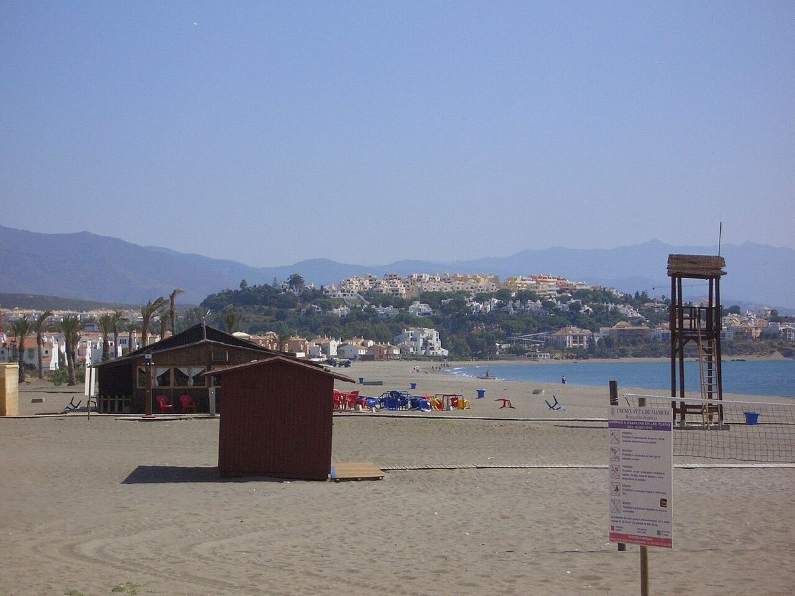
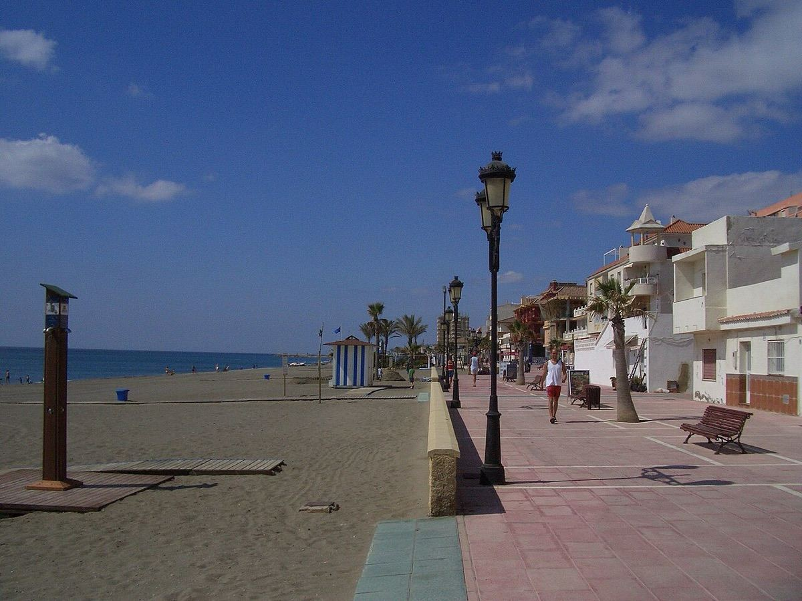
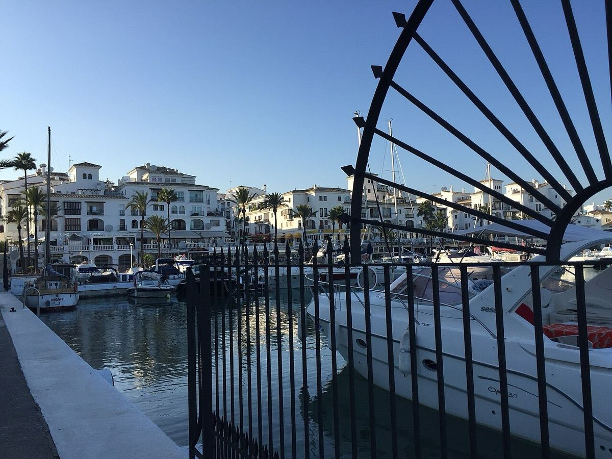
Nothing changed on accommodation. Sabinillas was not a lane focus in the September 21 hotel, apartment or villa sweeps, no new picks surfaced, and it is deprioritized relative to towns with stronger kid-facility evidence.
The town case is unchanged: the longest totality of any candidate area (3m49s), a flat working village with its own supermarkets, bank, health centre and market, a confirmed underpass for the A-7 crossing (not an at-grade crossing), and a Blue Flag beach with a play area. The weaknesses are unchanged too: no suitable 2027 accommodation posted yet; the coolest, most variable sea and the windiest stretch here; about 1h20 from the airport; no rail link. This town is watched, not searched, until November 2026.
- For: longest totality of any candidate area; flat, walkable village with everyday services; grade-separated A-7 crossing; Blue Flag beach with a play area.
- Against: no live, suitable 2027 accommodation yet and no new evidence in the September sweeps; coolest, windiest sea; farthest transfer of the western towns; no rail link.
- Official tourism site: manilva.es
Accommodation options
Booking.com snapshots from 2026-09-20, 9 nights (29 Jul – 7 Aug 2027); only a 9-night figure exists for each, no 6–7-night price was checked. The exact names "San Luis de Sabinillas" and "Puerto De La Duquesa" returned no properties; the wider "Manilva" search found three, 99% flagged unavailable.
- Hotel Apartamentos Manilva Sun. Fitting six needs a 2BR plus 1BR apartment combined: about €9,213 (VAT-inclusive estimate, both units, checked 2026-09-20). "On a hill above the Costa del Sol" per its own description; guest reviews mention a lift; non-refundable.
- Casa Oasis. Billed as three bedrooms, but only two and four beds shown — one short. About €6,331 (VAT unconfirmed estimate, checked 2026-09-20), 1.1 miles from the beach, two reviews only.
- Villa Bahia de Las Rocas. Four bedrooms with a pool, the most expensive property found in this whole research: about €32,269 (VAT unconfirmed, checked 2026-09-20), 3.6 miles from downtown Manilva.
- Hotel Doña Luisa and Hotel Don Agustín, beachfront in the centre, have no family suite or confirmed lift; six people need two or three double rooms.
- Duquesa Harbour Club Aparthotel, Puerto de la Duquesa, fits access needs best on paper (lift, A/C, kitchen, about 200 m flat to the beach), but its largest confirmed unit sleeps about four; a second unit was not priced.
- A "3 Bed Villa – Sleeps 6" listing is the right size on paper, but both source pages failed to load, so address, terrain and price are unconfirmed.
Links
Photos of each property are on its own site or listing; they aren't copied here. Booking.com links open with the family's dates and party filled in; nothing is booked by opening them.
Eclipse viewing
Totality at Paseo Marítimo de Sabinillas (36.3684, -5.2244): 3m49s, about 10:46:08–10:49:58 CEST on 2 August 2027 (IGN-anchored, ±2 s) — the longest of any candidate area; nearby Puerto de la Duquesa is about 3m51s. Sun at about 39° altitude, 96° azimuth, east-southeast over the sea; no regional terrain, including Gibraltar, obstructs the view, though buildings right behind a specific spot are unchecked. No driving is needed on eclipse day; beaches are public, though heavy crowds should be expected.
Getting there and around
About 1h20 by road from Málaga airport, the longest transfer of any candidate area; a pre-booked minivan is normal for six people. No rail link — Sabinillas sits west of the C1 line serving Fuengirola and Benalmádena. The A-7 crossing on both measured routes is a confirmed tunnel or underpass, safer than the unconfirmed at-grade crossings found at La Cala de Mijas or Alcaidesa. Centre to beach is 391 m, flat; centre to Puerto de la Duquesa is 1,637 m, about 20 m of climb each way, 5.1% steepest sustained — mild, useful for evening dining.
Beach and children
Sabinillas beach holds Blue Flag status, is about 1,700 m long, with lifeguard cover, showers and a children's play area; one source also describes a seasonal inflatable water park. The town reads as an authentic fishing village, likely calmer at night than Estepona, though chiringuito noise in August is plausible and unconfirmed. No aquarium- or theme-park-scale attraction was found here.
Access for grandmothers
Both measured routes are flat or nearly so, and the A-7 is crossed by underpass, not at street level. Lift and bathroom type are unconfirmed at Hotel Doña Luisa and Hotel Don Agustín. Duquesa Harbour Club has a confirmed lift but too-small units. Manilva Sun has a lift but a reported roughly 15-minute walk down to the beach and back — beyond the family's 10-minute-climb tolerance — and a bathtub rather than a walk-in shower per one review. Bathroom and shower type were not confirmed for any property.
Heat, weather and sea
The coolest, most variable water of any stretch compared here: near-Strait waters average about 21–23°C (Tarifa climatology: mean about 21.5°C, range 17–24°C), with sharp wind-driven drops possible. This stretch is the most exposed to levante and poniente funnelling through the Strait of Gibraltar — levante blows more than 150 days a year, mostly May–October, reaching 20–40 knots, an annoyance for children and grandmothers rather than a safety issue. Sitting largely outside the terral's usual reach, it gets its own heat from levante instead. Manilva's Feria de Agosto ran 6–10 August 2025 and 5–9 August 2026; no 2027 date is published. If the pattern repeats, 2027 could fall around 4–8 August, overlapping the last days of a stay that ends 4–7 August — extrapolation, not fact.
Open questions
- Whether suitable 2027 accommodation posts once rates load, about November 2026, and whether Duquesa Harbour Club has a larger unit or a priced two-unit combination.
- Address, terrain and price of the "3 Bed Villa – Sleeps 6" listing; lift and bathroom type at Hotel Doña Luisa and Hotel Don Agustín; the actual 2027 Manilva Feria de Agosto dates.
Sources
Vault notes (names only):
- Eclipse-2027-Shortlist-Synthesis-2026-09-19 (current state)
- Eclipse-2027-Module-E-Sabinillas-2026-09-20
- Eclipse-2027-Module-E-Round2-Live-Check-2026-09-20
- Eclipse-2027-Module-B-Western-Comparison-2026-09-19
- Eclipse-2027-Gap-Walkability-Measurements-2026-09-19
- Eclipse-2027-Gap-Summer-Beach-Conditions-2026-09-19
- Eclipse-2027-Gap-Eclipse-Week-Context-2026-09-19
- Eclipse-2027-Module-A-Eclipse-Geography-2026-09-19
External:
Motril
Reserve
Costa Tropical working port town in the path, with 1m41s totality (sweep figure; representative). Flat, cheapest town in the corridor (hotel avg ~$90–100/night), full year-round infrastructure. Modest loveliness — the trade-off for the price.
Research is thin. The notes contain only two hotel snippets for Motril. No apartment or villa picks surfaced for the town. This file is honest about the gap: Motril is a practical fallback base, not a researched contender.
- For: cheapest flat base; full year-round town infrastructure; in the path.
- Against: only two hotel snippets of evidence; no apartments or villas found; working port town, modest loveliness; Playa de Poniente has rock platforms after new breakwater works.
- Official tourism site: none verified in this research pass.
Accommodation options
All prices are non-eclipse signals. No August 2027 pricing exists. Assume eclipse premiums and 7-night minimums.
Hotels
- Impressive Playa Granada Golf: strongest family option found. Beachfront, lifts, wheelchair accessibility, children's pool, MiniClub, playground; 8.6/2,923. ~€121/night (Oct 2026 signal). No shower evidence either way — a gap. Six likely needs two rooms (family rooms sleep 4). On-site nightclub — mild caution.
- Elba Motril Beach & Business: Expedia "shower/bathtub combination" — expect tub-side, not walk-in. Lift, kids' club, playground, kids' pool; beach across the road. ~€99/night (Oct 2026 signal).
No apartments or villas
None surfaced in the sweeps. Villa Royal (Salobreña) is the nearest villa pick in this corridor.
Eclipse viewing
- Totality: 1m41s (representative estimate), about 10:45–10:52am CEST on 2 August 2027.
- A beachfront base gives open sky to the east. No property-specific viewing was verified.
Getting there and around
- Málaga airport: about 1h20 by road (approximate).
- Flat town. Playa de Poniente has rock platforms after new breakwater works (sweep).
Beach and children
- Playa de Poniente: rock platforms after breakwater works; beach across the road from Elba.
- Kids' pools and MiniClub at Impressive Playa Granada Golf; kids' pool and playground at Elba.
- Working port town — modest beach loveliness compared with Nerja or Marbella.
Access for grandmothers
- Both hotels have lifts. Shower evidence: none at Impressive; tub-combo expected at Elba.
- Flat terrain. This is thin evidence — verify directly before booking.
Heat, weather and sea
- Granada coast ~90–95% favorable climatology around 10:45am — not a forecast.
- August heat strong.
Open questions
- Impressive Playa Granada Golf: shower types; whether two rooms suffice for six; August 2027 rates and minimums.
- Elba Motril Beach & Business: sleep-6 configuration; August 2027 rates.
- Whether any apartments or villas exist for Motril at all — the sweeps did not surface any.
- Eclipse-week pricing everywhere — watch for August 2027 calendars to open.
Sources
Vault notes (names only):
- Eclipse-2027-Corridor-Sweep-2026-09-21 (the only note with real Motril material)
Topics for every place
What the family needs
Party
Six people: four adults (two parents and two grandmothers) and two children. This is Jeremy's 2026-09-19 answer, resolving an earlier six-versus-eight discrepancy in the research.
Dates and length of stay
The whole trip is 2–3 weeks; the departure date is still to be decided. The Portugal leg, based near Nazaré, may come before or after the eclipse — the family may arrive on the coast from Portugal or leave for it. The eclipse itself is on Monday, 2 August 2027.
At the eclipse destination, the current plan is 5–8 nights (Jeremy, 2026-09-21): arriving 29–31 July and leaving 3–7 August, with at least two nights before 2 August and at least one after. Four nights could be considered, but most places will likely require a minimum of 5 or 7. A 7-night stay could be, for example, 29 July – 5 August (four nights before, three after) or 31 July – 7 August (two before, five after, which suits a Saturday changeover). This replaced an earlier 9-night basis (29 July – 7 August) that had been used for pricing; that window overstates the cost of the planned stay and should not be read as the current plan.
Grandmothers
They can walk, handle one flight of stairs, and manage a gentle 10-minute climb. Regular bathtubs are acceptable; a walk-in shower is preferred but not required. A pool is a plus, but pool fencing is not required. (Jeremy, 2026-09-21.) This limit is looser than the research first assumed: it keeps Benalmádena's flat coastal strip viable and makes a promenade-front La Carihuela property acceptable. It doesn't change which areas are searched first.
Children
Ages 6.5 and 8.5 at the time of travel. Kid compatibility and parental ease are balanced with grandmother access as the main tests of a place (Jeremy, 2026-09-21). Mediterranean setting and weather come after those, price is weighed against comfort, amenities and location, and totality duration ranks last.
Rooms and bathrooms
The research has treated air conditioning in every bedroom as a requirement, because the terral wind can push Costa del Sol temperatures toward 40°C. A lift is helpful but not required where the grandmothers would manage only one flight of stairs (Jeremy, 2026-09-21); more than one flight without a lift fails. Apartments have been judged on having three bedrooms and at least two bathrooms. Shower type (walk-in or bath) is unresolved for several leading properties; the Google Maps photo pass may settle some, and the rest needs a direct question to the property, which is Jeremy's call.
Price, comfort and location
Affordable is good, but the cheapest option doesn't win by default. Price is weighed against comfort, amenities and location (Jeremy, 2026-09-21).
What we won't do
- No driving on eclipse day. The sun will be about 38–41° high, just south of east, over the sea, so a beach within walking distance should work anywhere on this coast. Specific spots have been checked only near the Fuengirola and Benalmádena finalists (see "Eclipse day").
- No booking or contact by research agents. Booking needs Jeremy's own account and personal details, and contacting a property, including inquiry-form ones like the El Faro apartment in Estepona, is his call.
Sources
Vault notes (names only):
- Eclipse-2027-Shortlist-Synthesis-2026-09-19 ("Family decisions", "Area judgments", "Shorter stays and the Portugal–Spain leg")
- Travel/AGENTS.md
Getting between Portugal and Spain
Recommendation
Fly Lisbon or Porto to Málaga, then take a pre-booked minivan to the coast — in either direction. Door to door, Nazaré to the Costa del Sol (or the reverse) runs about 4.5–6 hours: roughly 1h15–1h30 by road to Lisbon airport, airport buffers, a 1h15–1h25 flight, and a 20–30 minute minivan transfer. It is the only option that stays under six hours and avoids multi-leg train connections, which matters with two grandmothers and two young children. This is the same recommendation whichever leg comes first — Portugal-first or Spain-first.
Plane
Lisbon (TAP, about 15 flights/week; Ryanair, about 5/week) and Porto (Ryanair only, about 10/week) both fly direct to Málaga, in around 1h15–1h25. TAP does not serve Porto–Málaga. A 2026-benchmark round-trip fare for six people runs about €900–1,800+, before Ryanair bag fees. That is a round-trip figure. The family needs one Portugal–Spain flight, so it overstates their cost; no one-way fare was priced. August is the most expensive month on this route.
Train
Not practical. There is no direct or through-ticketed Lisbon–Málaga train, and no direct Madrid–Lisbon train has existed since the sleeper Trenhotel Lusitania was discontinued in 2020. The current route runs Lisbon → Badajoz → Madrid on regional trains (about 9–11 hours, across two separate ticketing systems, CP and Renfe), then the Madrid–Málaga AVE (about 2h20–2h50). Total: roughly 12–14+ hours over 4–5 separate legs, most realistically needing an overnight stop rather than one long day. Reported plans to revive a Lisbon–Madrid service are unofficial and unconfirmed for 2027.
Car and bus
Driving is an estimated 7–8 hours from Nazaré to the Costa del Sol — not a directly sourced figure, extrapolated from a shorter Algarve-to-Fuengirola benchmark — plus a one-way cross-border drop fee of roughly €195–250, and it's unconfirmed whether a 7–9 seat vehicle can actually be hired one-way from Portugal into Spain. Bus (Lisbon–Seville by FlixBus or ALSA, then on to Málaga) runs 13–16+ hours. Both are weak options for this party and are an emergency fallback, not a planned choice.
Arriving at Málaga airport
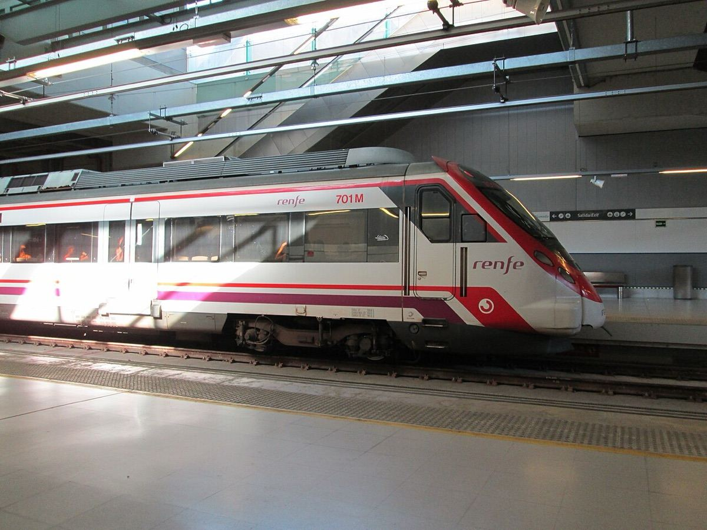
For the central Costa del Sol towns under consideration (Fuengirola, Benalmádena, Torremolinos), the choice is a pre-booked minivan, two standard taxis, or the Renfe C1 Cercanías train.
- Minivan — the arrival-day recommendation. Pre-booked 6-seat minivans run about €62–79 to Fuengirola and €68–70 to Benalmádena (2026 published prices, several operators). This supersedes the transport note's earlier suggestion of taking the C1 train on arrival.
- Two taxis. A standard Málaga taxi seats only 4 passengers, so six people need two cars. Metered fares run about €36–54 to Fuengirola and €29–34 to Benalmádena Pueblo, each — roughly double the single-taxi rate, plus the hassle of splitting luggage and people across two vehicles.
- Renfe C1 train. €2.05 per adult, about 30–45 minutes to Fuengirola. The airport, Fuengirola, and Benalmádena–Arroyo de la Miel stations are all reported step-free, but the C1 is an ordinary commuter train with no luggage racks — fine off-peak once the family isn't carrying bags, but not the arrival-day choice with two grandmothers, two young children, and 2–3 weeks of luggage. Benalmádena's station is also 3.2 km from the coast and uphill, a further reason to skip it there on arrival day.
Other candidate regions have their own transfer profile: western Costa del Sol (Estepona, Sabinillas) is about 1h15–1h20 from the airport by minivan or the direct Avanza coach; the Costa Tropical (Almuñécar) is about 1 hour by car, with a slower direct bus (about 2 hours) and minivan service likely available but not separately confirmed.
Long-haul flights and open-jaw tickets
This is the biggest open question for the whole Portugal–Spain leg. Where the family's long-haul flights land and leave from could remove a Portugal–Spain connector leg entirely: an open-jaw ticket into Lisbon and home from Málaga (or the reverse) means flying that connector only once instead of twice. Málaga has had seasonal direct US flights in some years, but 2027 schedules aren't published yet, and no direct Málaga–San Francisco or other US West Coast service was found using 2026 schedules as a proxy — the workable long-haul pattern is one stop, via Madrid, London Heathrow, or Frankfurt. This needs a dedicated check once airlines publish 2027 long-haul schedules and once the family's outbound and return cities are decided.
When to book
Neither Ryanair nor TAP has August 2027 fares reliably on sale yet as of this note. Ryanair usually opens its summer schedule between about November and January; TAP's release pattern for August 2027 is unconfirmed, so check flytap.com periodically. If Spain comes first, book the flight out of Málaga after the eclipse (3–7 August 2027) as soon as it goes on sale: after Spain's own August 2026 eclipse, travel-demand data showed roughly a 25% rise in overall travel demand and a 70% jump in insured trips, and AGP's July–September period is already the region's seasonal peak regardless of the eclipse. That's inference from a different 2026 eclipse — a different path and date — not a direct 2027 AGP forecast, but it's a reason to book the Spain-outbound leg promptly rather than a precise prediction.
Sources
Vault notes (names only):
- Eclipse-2027-Shortlist-Synthesis-2026-09-19 (current state and corrections)
- Eclipse-2027-Portugal-Spain-Transport-2026-09-20
- Eclipse-2027-Gap-Regional-Access-2026-09-19
- Eclipse-2027-Module-F-Finalists-2026-09-20
External:
Eclipse day
Timing and totality by place
Totality happens on Monday 2 August 2027, mid-morning. Figures are module A's coastal-point values: a Besselian-element computation anchored to IGN's published municipal timings, accurate to roughly ±2 s. "Start of totality" is C2, when the Moon fully covers the Sun.
| Place | Search round | Totality | Start of totality (CEST) |
|---|---|---|---|
| Fuengirola–Los Boliches | First | 3m06s | 10:47:17 |
| Benalmádena Costa | First | 2m54s | 10:47:30 |
| La Cala de Mijas | First | 3m21s | 10:47:03 |
| Central Estepona | First | 3m37s | 10:46:22 |
| Sabinillas | Second | 3m49s | 10:46:09 |
| Torrox Costa | Second | 1m49s | 10:48:45 |
| Almuñécar (Puerta del Mar) | Second | 1m51s | 10:49:04 |
Totality reaches the western places (Sabinillas, Estepona) about three minutes before the eastern ones (Torrox, Almuñécar), and lasts longest in the west. Sabinillas has the longest totality of any retained place, at 3m49s; Torrox Costa the shortest, at 1m49s.
Where the sun will be
At totality, the sun sits at about 38–41° altitude and 96–98° azimuth everywhere on this coast — just south of due east, out over the sea.
The obstruction rule, in plain words. At that height, a building or headland can only block the view if it is both tall and very close: something of height h metres blocks the sun only if it stands within about h ÷ 0.78 of the viewer. A 20 m building would have to be within about 26 m; a 45 m tower within about 58 m. Anything farther away physically cannot reach high enough to get in the way — the risk is a wall or building right next to where you stand, not a hill or a row of hotels down the beach.
Regional terrain, including Gibraltar, blocks no candidate beach. The Rock of Gibraltar (about 426 m) sits south-southwest of the westernmost beaches (Torreguadiaro, Sotogrande, Alcaidesa), while the sun at totality is east-southeast — opposite sides of the sky. Even setting geometry aside, the Rock's angular height from those distances is only about 1.2–1.9°, far below the sun's ~38°. The same logic clears every other headland checked (Rincón de la Victoria's Cantal Alto, La Herradura's bay). What remains unchecked everywhere is a building or wall right at a specific standing spot — a local, not a regional, question.
Viewing spots checked
Module F checked three actual viewing points on the ground, for the four Fuengirola/Benalmádena finalist properties, using OpenStreetMap building data out to 500 m toward the sun:
- Playa de San Francisco (36.5447, -4.6172), Leonardo Hotel's beach in Los Boliches — 243 m walk, no buildings at all found within 500 m toward the sun.
- Playa de Santa Amalia (36.5364, -4.6215), for MalagaSuite in Fuengirola — no buildings found within 500 m toward the sun. The measured 710 m walk is unreliable: it used an approximate location, and the apartment is on the seafront promenade.
- Playa Malapesquera (36.5949, -4.5181), shared by Best Triton and the Diana 2 apartment in Benalmádena — 18–100 m walk; eight buildings sit in that direction within 500 m, but the nearest is 297 m away and even the tallest tagged one (30 m) would need to be within about 38 m to block anything.
Not yet done for La Cala, Estepona, Almuñécar, Sabinillas, or Torrox. No equivalent walkable-viewpoint-plus-building check has been run for these five places. The coast-wide geometry above still applies, but no specific spot in any of them has been checked against mapped buildings, and OSM's height tagging is incomplete everywhere, so an untagged tall structure can't be fully ruled out at any point, checked or not.
Traffic and crowds
Plan no driving on 2 August, especially in the hour or two after totality ends (around 10:50–10:51 local). During Spain's 12 August 2026 eclipse, traffic on Catalonia's AP-7 motorway backed up about 10 km despite access controls. The DGT (Spain's traffic authority) named the post-totality return trip the highest-risk period and told drivers not to stop on the shoulder. None of this is a 2027-specific plan; the DGT is expected to publish one only close to the event.
Beaches are public and need no reservation. Under Spain's Ley de Costas, beaches are public and free to use for walking, bathing and standing. Expect heavy ordinary August crowding on top of eclipse demand — none of the checked viewing points is a designated eclipse venue, so arriving well before first contact to claim space is sensible.
Weather
Eclipse-day cloud cover cannot be forecast eleven months out. What exists is long-run climatology (2000–2024 satellite and ground data), which favours the Mediterranean (Alborán) coast over Spain's Atlantic side: one source gives Cádiz about 88% sun-visible days against 74% for the more Atlantic-exposed Barbate/Tarifa/Zahara group, and states that Atlantic cloudiness usually doesn't push past Tarifa into the Strait. Gibraltar is a partial exception, with morning marine stratus that usually burns off within an hour or two. No town-by-town comparison exists east of Marbella, so nothing here separates Fuengirola from Almuñécar on weather grounds. Climatology is not a forecast for 2027-08-02 specifically.
Eye safety
Only glasses meeting the ISO 12312-2:2015 standard are safe for direct viewing. Before the 12 August 2026 eclipse, Spain's consumer-protection ministry ordered several models of eclipse glasses withdrawn from sale over injury risk (the research notes record seven; an early press report said six). Some were on ordinary retail sale, not only from obscure sellers. Buy from a reputable supplier well ahead of time and check that the CE mark, the ISO 12312-2:2015 marking, the manufacturer's name, and instructions are all present on the glasses themselves, not just the packaging.
Sources
Vault notes (names only):
- Eclipse-2027-Shortlist-Synthesis-2026-09-19
- Eclipse-2027-Module-A-Eclipse-Geography-2026-09-19
- Eclipse-2027-Module-F-Finalists-2026-09-20
- Eclipse-2027-Gap-Eclipse-Week-Context-2026-09-19
External:
Booking and what happens when
Where things stand
Nothing is booked. No hotel, host or agency has been contacted by anyone doing this research. Every price here is a Booking.com snapshot or a published tariff, not a quote. Booking, holding a room, or contacting a property is Jeremy's call; research agents don't do any of these. The current plan is a stay of 5–8 nights at the eclipse destination, arriving 29–31 July and leaving 3–7 August (Jeremy, 2026-09-21). Four nights could be considered, but most places will likely require 5 or 7; a 7-night stay could be 29 July – 5 August or 31 July – 7 August. That replaces the earlier 9-night window (29 July – 7 August), based on a trip-length assumption Jeremy has since corrected.
Market signals
Independent sources agree on direction: demand for eclipse-week accommodation on this coast rose sharply through August and September 2026, without showing that any town is sold out.
- AEHCOS, the Costa del Sol hotel association, says hotels typically sit around 7% booked this far ahead of a date; for early August 2027 dates, some hotels were already at 12% as of late August 2026.
- On one comparison platform, CHECK24, about 80% of tracked 2027-eclipse bookings were made after the 12 August 2026 eclipse in northern Spain, and Málaga province was reported to hold over 70% of those tracked bookings.
- Hotel Helios in Almuñécar has added a minimum-stay rule to block single-night, eclipse-only bookings, while its director says availability remains open — the first property-specific eclipse policy found in this research.
- Searches for Granada-province accommodation for 30 July – 2 August 2027 rose roughly fourteen-fold since early July 2026, with Almuñécar drawing the most interest.
None of this proves scarcity — Booking.com's inventory in most searched towns looks visibly incomplete, and AEHCOS sources reported that hotels planned to finalize 2027 rates around November 2026. It does mean waiting costs something: fewer configurations, higher prices, not a hard "sold out" cliff.
Holding a room now
These could be held on 2026-09-20 with free cancellation and nothing paid until 2027 (Booking.com snapshots, VAT-inclusive totals are estimates). Holding one is Jeremy's decision; it needs his own Booking.com account, so no agent can do it. Prices will have moved, and none of this is a recommendation.
- Hotel Best Triton, Benalmádena. Two 26 m² Double Rooms, each with two double beds: about €4,927 for 6 nights (29 Jul – 4 Aug). Beachfront, three pools including a children's splash pool, 8.6 from about 1,963 Booking.com reviews. Free cancellation before 24 July 2027, the latest deadline found. A Tripadvisor reviewer reported lift outages in August 2026; a later check found that report may belong to a different hotel, so lift reliability is an open question.
- Diana 2, Benalmádena. A three-bedroom apartment of about 90 m² on the 8th floor, with a lift, sea views and a kitchen: €5,100 for 29 Jul – 5 Aug or €4,852 for 31 Jul – 7 Aug (7-night minimum). 9.2 from only 13 reviews. Free cancellation only until mid-June 2027.
- Leonardo Hotel Fuengirola. A Superior Quadruple plus a Comfort Twin, breakfast included: about €6,200 for 6 nights. Walk-in wet rooms and a lift. Free cancellation before 26 July 2027. It didn't offer the Saturday-to-Saturday window (31 Jul – 7 Aug).
The places now leading (Don Carlos in Marbella, Iberostar Waves in Torrox Costa) had no 2027 rates posted, so they can't be held yet. Holding more than one option while deciding is possible, but each must be cancelled before its own deadline.
Questions to ask the hotels
No published source settles these. Asking is Jeremy's decision; research agents don't contact properties. With free cancellation, they can be asked after a room is held.
Leonardo Hotel Fuengirola
- Can a Family Room sleeping up to six be held for a 5–8 night stay around 2 August, and what does it cost against the quadruple-plus-twin combination?
- If two rooms are needed, can they be interconnecting or on the same floor, and is that guaranteed?
- Are young children welcome in the restaurant and pool areas in August? Some listings still describe the hotel as adults-recommended.
Hotel Best Triton
- Do the Double Rooms have a walk-in shower or a bath?
- Can two Double Rooms be on the same floor, and does the lift serve every floor of the main building and the annex? Are the lifts reliable?
- Is the two-room Suite available for these dates, and what does it cost?
Both
- Is air conditioning controlled individually in each room?
- Are there terms specific to eclipse week, such as a minimum stay, a surcharge, or a rate not yet released for 2027?
November 2026 re-check
- August 2027 calendars opening. The first real availability and price signals for the target week.
- The ~November 2026 rate window. AEHCOS sources reported that Costa del Sol hotels planned to finalize 2027 rates around November 2026. A re-check then would cover direct rates for Don Carlos Marbella, Iberostar Waves Málaga Playa, Leonardo Fuengirola, Best Tritón, Hotel Helios and Hotel Toboso, and the second-round areas.
- Sabinillas, which had no suitable candidate in the 2026-09-20 round, from a visibly small, likely incomplete Booking.com sample of 3 properties. That is not confirmed unavailability. It has the longest totality of any place in this guide, 3m49s. (Torrox Costa, the other area without a candidate then, now leads with Iberostar Waves Málaga Playa.)
- El Faro / EST31 in Estepona. Its own site publishes a 7-night minimum and a rate computing to about €1,200–1,230 for either 7-night window — well below every hotel option, itself a reason for caution. It has a confirmed lift; booking is by inquiry form only, so asking is Jeremy's call.
- The Google Maps photo pass over the remaining shower questions — the open research item that needs no contact.
Costs the room price leaves out
None of the accommodation figures above include these (dated benchmarks, not quotes, for the party of six):
- Airport transfers. A pre-booked minivan is about €62–79 each way to Fuengirola and about €68–70 each way to Benalmádena (2026 prices) — roughly €125–160 round trip. A standard Málaga taxi is licensed for four, so six people need two taxis or one larger pre-booked vehicle, costing about the same as the minivan.
- No tourist tax. Andalusia levies no regional tourist tax, and the current PP–Vox regional government has explicitly ruled one out. A change before 2027 is possible but not indicated so far.
- Eclipse glasses. ISO 12312-2 glasses for six run roughly €18–30, depending on supplier and pack size (2026 retail prices).
- Groceries, self-catering options. Module F priced groceries for this party at roughly €250–400 for a 9-night stay; scaled to 5–8 nights, roughly €140–355 — this guide's own scaling, not a separately sourced figure. No comparable eating-out figure exists for the hotel options, beyond the general benchmark that a Spanish sit-down lunch (menú del día) commonly runs €12–20 per person.
Sources
Vault notes (names only):
- Eclipse-2027-Shortlist-Synthesis-2026-09-19
- Eclipse-2027-Gap-Eclipse-Week-Context-2026-09-19
- Eclipse-2027-Short-Stay-Check-2026-09-20
- Eclipse-2027-Leading-Hotels-Direct-Check-2026-09-20
- Eclipse-2027-Module-F-Finalists-2026-09-20
External:
Useful websites
The eclipse
- IGN: the 2 August 2027 eclipse in Spain, from Spain's national geographic institute, the source for the totality times in this guide
- Andalucía tourism: the "trio of eclipses"
- NASA: interactive map of the eclipse path
- American Astronomical Society: safe eclipse glasses and suppliers
Weather and traffic
- AEMET, Spain's weather service
- DGT, Spain's traffic authority. Its eclipse-day traffic plan is expected close to the date.
Getting there
- Málaga airport (Aena)
- Renfe Cercanías Málaga, the C1 train from the airport to Benalmádena and Fuengirola
- TAP Air Portugal and Ryanair, which fly Lisbon or Porto to Málaga
Beaches
- Ley de Costas, the law that makes Spanish beaches public (Spanish)
Photo credits
The photos in this guide come from Wikimedia Commons under free licences (CC0, CC BY or CC BY-SA). Each photo's author, licence and source page are credited under it. Photos of hotels and rentals aren't copied here; follow the links in each place's Accommodation options.
Places set aside
Reserve and dropped places, with the reason for each.
Places set aside
How places were chosen
Areas are judged in this order: kid compatibility and parental ease first, then grandma access, then price, then Mediterranean setting, then weather, with totality duration last. (Jeremy, 2026-09-21.) This replaced the earlier order that ranked grandma access first.
The family bases on the Mediterranean side — the Costa del Sol and, as a second tier, the Costa Tropical near Almuñécar — plus the Cádiz/Strait coast. The Atlantic side (Vejer and the towns near it) was set aside when the family chose the Mediterranean.
Fifteen towns have active pages in this guide. The places below were considered and not carried forward. Reserve places are kept as substitutes if a leading area falls through; dropped places were ruled out on their own merits.
Reserve
- La Carihuela (Torremolinos) — 2m48s. A substitute for Fuengirola: flat promenade and fish restaurants near a C1 train stop, but a hill or stairs stand between the promenade and the town centre and some stations.
- Rincón de la Victoria / Torre del Mar — 1m57s / 1m42s. Close to Málaga on logistics alone, but neither offers a different kind of holiday from the central options already ahead of them.
- Torreguadiaro — 4m02s. Quiet and long totality, but everyday services are thin. (Sotogrande itself now has an active page.)
Dropped
- La Herradura — 1m48s. A sheltered bay, but visitor reports consistently describe a pebble beach that deepens within a few metres of the shore, which is poor for young children and grandmothers.
- Alcaidesa — 4m10s. A well-equipped beach, but a real-estate source calls a car "practically essential" there, and the measured route from the plaza to the beach is 1.45 km with an 82 m climb back.
- La Línea — totality not recorded for the beach in this research. Long totality was its one point in favour, but no family advantage was found.
- Cabo de Gata — San José is total, at about 1m30s, but services are sparse and access is remote, which suits neither children nor grandmothers; La Isleta del Moro sits at the edge of the path of totality and its status there is undetermined.
- Vejer de la Frontera (with Zahara de los Atunes) — the original inland-plus-beach pick. Set aside when the family chose the Mediterranean side and revised the priorities (Jeremy, 2026-09-19): a walled hill town with no sea view loses on kid compatibility and parental ease first.
Sources
Vault notes (names only):
- Eclipse-2027-Shortlist-Synthesis-2026-09-19 ("Area judgments" table and "Family decisions")
- Eclipse-2027-Spain-Options (Mel's 2026-09-19 update)
- Eclipse-2027-Module-B-Western-Comparison-2026-09-19
- Eclipse-2027-Module-C-Central-Comparison-2026-09-19
- Eclipse-2027-Module-D-Eastern-Alternatives-2026-09-19
- Eclipse-2027-Gap-Walkability-Measurements-2026-09-19